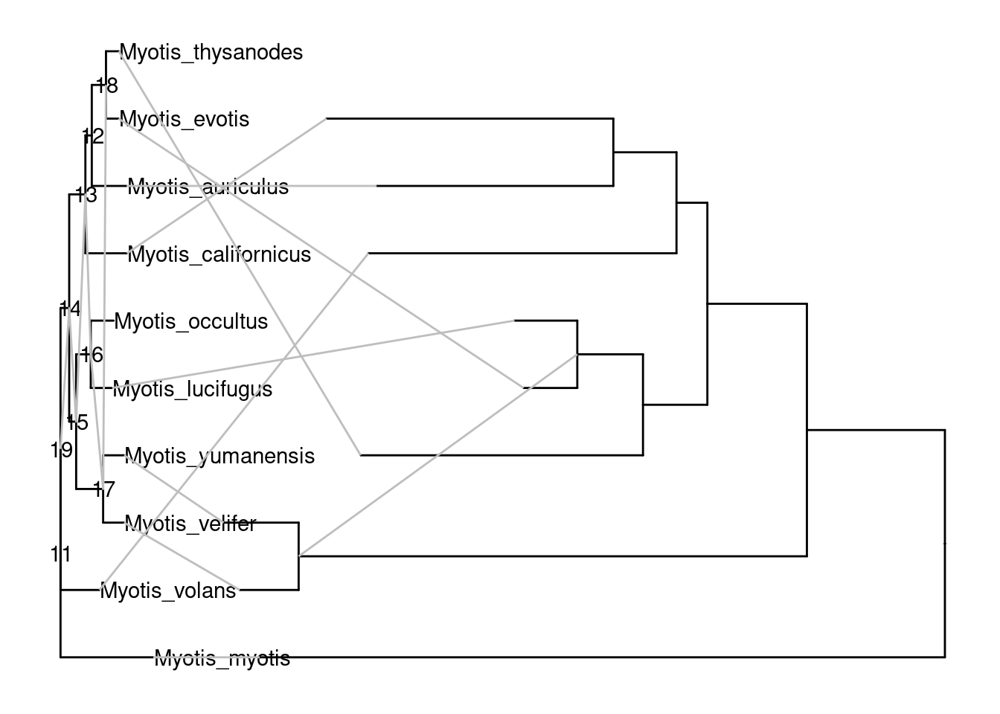
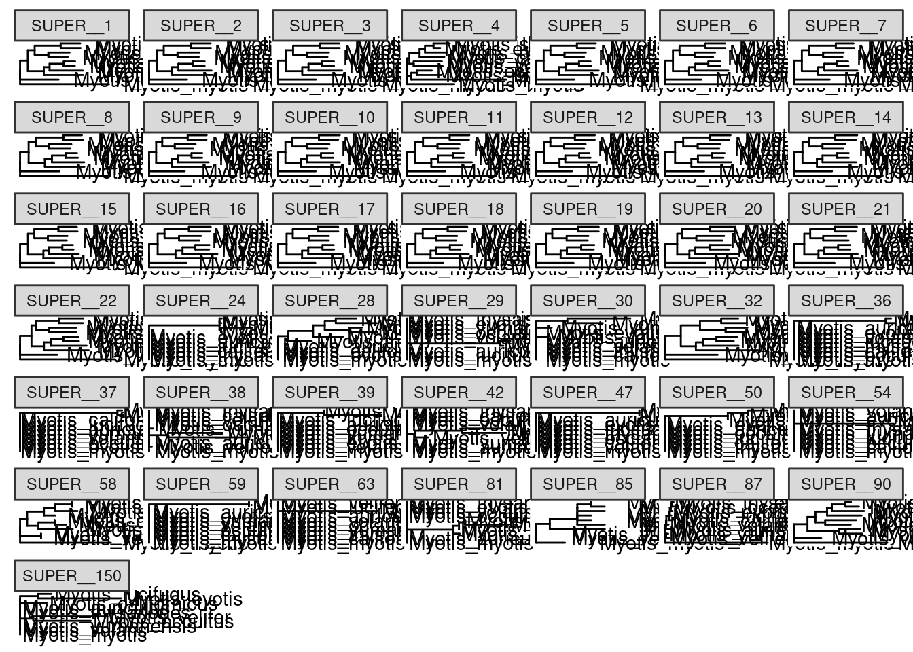
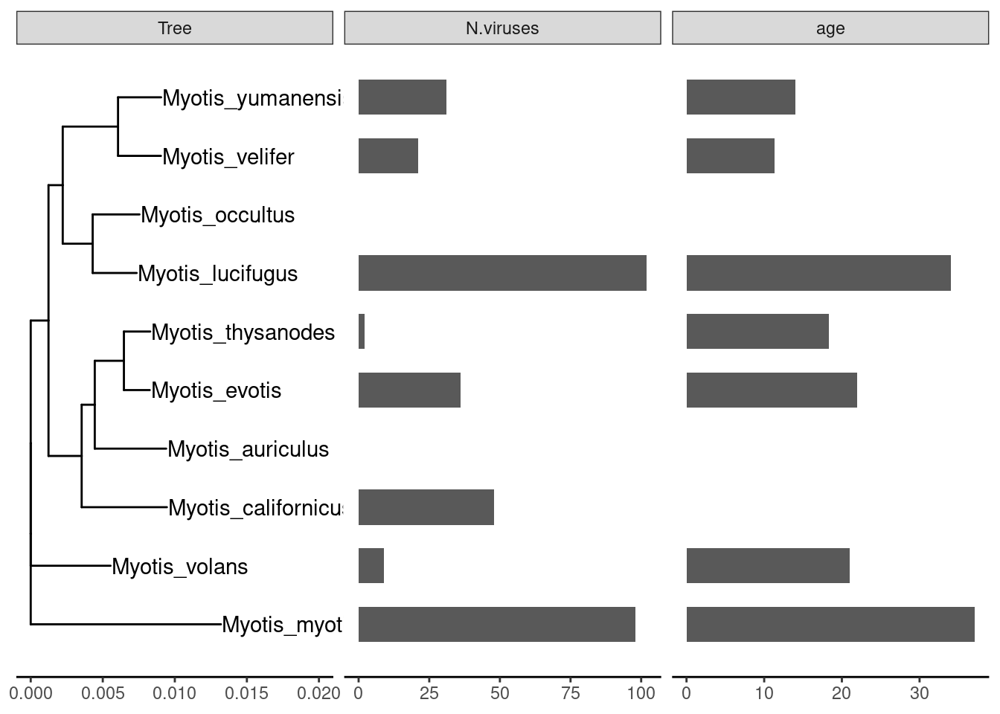
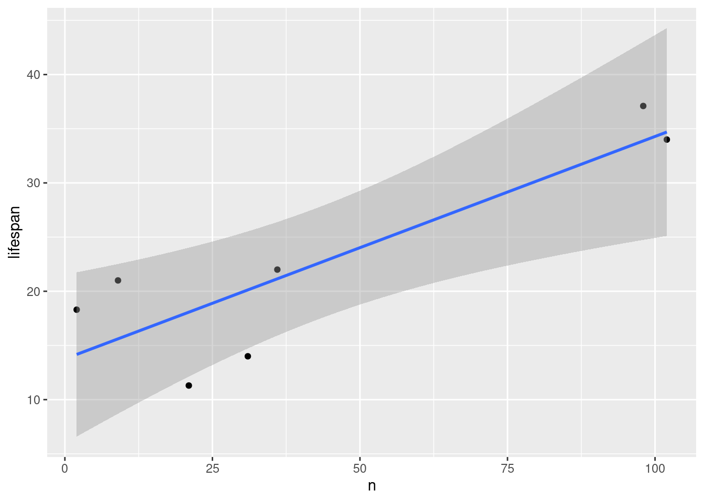

Last updated: 2023-10-23
Checks: 5 1
Knit directory: R_workflowr/analysis/
This reproducible R Markdown analysis was created with workflowr (version 1.7.1). The Checks tab describes the reproducibility checks that were applied when the results were created. The Past versions tab lists the development history.
Great job! The global environment was empty. Objects defined in the global environment can affect the analysis in your R Markdown file in unknown ways. For reproduciblity it’s best to always run the code in an empty environment.
The command set.seed(20230501) was run prior to running
the code in the R Markdown file. Setting a seed ensures that any results
that rely on randomness, e.g. subsampling or permutations, are
reproducible.
Great job! Recording the operating system, R version, and package versions is critical for reproducibility.
Nice! There were no cached chunks for this analysis, so you can be confident that you successfully produced the results during this run.
Great job! Using relative paths to the files within your workflowr project makes it easier to run your code on other machines.
Tracking code development and connecting the code version to the
results is critical for reproducibility. To start using Git, open the
Terminal and type git init in your project directory.
This project is not being versioned with Git. To obtain the full
reproducibility benefits of using workflowr, please see
?wflow_start.
library(tidyverse)── Attaching core tidyverse packages ──────────────────────── tidyverse 2.0.0 ──
✔ dplyr 1.1.3 ✔ readr 2.1.4
✔ forcats 1.0.0 ✔ stringr 1.5.0
✔ ggplot2 3.4.3 ✔ tibble 3.2.1
✔ lubridate 1.9.2 ✔ tidyr 1.3.0
✔ purrr 1.0.2
── Conflicts ────────────────────────────────────────── tidyverse_conflicts() ──
✖ dplyr::filter() masks stats::filter()
✖ dplyr::lag() masks stats::lag()
ℹ Use the conflicted package (<http://conflicted.r-lib.org/>) to force all conflicts to become errorslibrary(magrittr)
Attaching package: 'magrittr'
The following object is masked from 'package:purrr':
set_names
The following object is masked from 'package:tidyr':
extractlibrary(tidytree)If you use the ggtree package suite in published research, please cite
the appropriate paper(s):
Shuangbin Xu, Lin Li, Xiao Luo, Meijun Chen, Wenli Tang, Li Zhan, Zehan
Dai, Tommy T. Lam, Yi Guan, Guangchuang Yu. Ggtree: A serialized data
object for visualization of a phylogenetic tree and annotation data.
iMeta 2022, 1(4):e56. doi:10.1002/imt2.56
Guangchuang Yu, David Smith, Huachen Zhu, Yi Guan, Tommy Tsan-Yuk Lam.
ggtree: an R package for visualization and annotation of phylogenetic
trees with their covariates and other associated data. Methods in
Ecology and Evolution. 2017, 8(1):28-36. doi:10.1111/2041-210X.12628
Attaching package: 'tidytree'
The following object is masked from 'package:stats':
filterlibrary(ggtree)ggtree v3.6.2 For help: https://yulab-smu.top/treedata-book/
If you use the ggtree package suite in published research, please cite
the appropriate paper(s):
Guangchuang Yu, David Smith, Huachen Zhu, Yi Guan, Tommy Tsan-Yuk Lam.
ggtree: an R package for visualization and annotation of phylogenetic
trees with their covariates and other associated data. Methods in
Ecology and Evolution. 2017, 8(1):28-36. doi:10.1111/2041-210X.12628
Shuangbin Xu, Lin Li, Xiao Luo, Meijun Chen, Wenli Tang, Li Zhan, Zehan
Dai, Tommy T. Lam, Yi Guan, Guangchuang Yu. Ggtree: A serialized data
object for visualization of a phylogenetic tree and annotation data.
iMeta 2022, 1(4):e56. doi:10.1002/imt2.56
G Yu. Data Integration, Manipulation and Visualization of Phylogenetic
Trees (1st ed.). Chapman and Hall/CRC. 2022. ISBN: 9781032233574
Attaching package: 'ggtree'
The following object is masked from 'package:magrittr':
inset
The following object is masked from 'package:tidyr':
expandlibrary(ape)
Attaching package: 'ape'
The following object is masked from 'package:ggtree':
rotate
The following objects are masked from 'package:tidytree':
drop.tip, keep.tip
The following object is masked from 'package:dplyr':
wherelibrary(naturalsort)
library(taxize)df.chr.tr <- read_tsv('../data/trees/iqtree/20230411_genes_noempty_complete_concat_byChr/alltrees.scaffold.phylo.list', col_names=c("Chr", "phylo"))Rows: 59 Columns: 2
── Column specification ────────────────────────────────────────────────────────
Delimiter: "\t"
chr (2): Chr, phylo
ℹ Use `spec()` to retrieve the full column specification for this data.
ℹ Specify the column types or set `show_col_types = FALSE` to quiet this message.tip_order = c(
"Myotis_lucifugus",
"Myotis_occultus",
"Myotis_yumanensis",
"Myotis_velifer",
"Myotis_thysanodes",
"Myotis_evotis",
"Myotis_auriculus",
"Myotis_californicus",
"Myotis_volans",
"Myotis_myotis"
)
# df.chr.tr.withPhylo<- df.chr.tr %>% mutate(tree = df.chr.tr$phylo %>% {ifelse(is.na(.), NA, read.tree(file=NULL, text=.))})
l.chr.tr <- df.chr.tr %>% select(Chr, phylo) %>% split(.,.$phylo) %>% set_names(., sapply(., . %>% pull(Chr))) %>% lapply(., . %>% pull(phylo) %>% read.tree(file=NULL, text=.) %>% ape::root.phylo(., 'Myotis_myotis', resolve.root=T))
class(l.chr.tr) <- "multiPhylo"tr.species <- root.phylo(read.tree(text="(Myotis_auriculus:0.0049530287,(Myotis_californicus:0.0059138183,(((Myotis_lucifugus:0.0030514562,Myotis_occultus:0.0032471934)100/100:0.0020768353,(Myotis_velifer:0.0029764851,Myotis_yumanensis:0.0029904558)100/100:0.0038364895)100/100:0.0009882682,(Myotis_myotis:0.0131977455,Myotis_volans:0.0055379826)100/100:0.0012340035)100/100:0.0023012371)100/100:0.0009098871,(Myotis_evotis:0.0017915030,Myotis_thysanodes:0.0018269795)100/100:0.0020219079);"), outgroup = "Myotis_myotis", resolve.root = T)
master.tree <- tr.speciesupham.ml <- read.tree("../data/trees/UphamEtAl2019_Dryad_doi_10.5061/RAxML_bipartitions.result_FIN4_raw_rooted_wBoots_4098mam1out_OK.newick")
upham.ml.ourbats <- upham.ml %>%
keep.tip(tip_order[str_detect(tip_order, "occultus", negate = T)] %>% str_c(., "_VESPERTILIONIDAE_CHIROPTERA"))
upham.ml.ourbats$tip.label <- upham.ml.ourbats$tip.label %>%
str_remove("_VESPERTILIONIDAE_CHIROPTERA")ourtree <- rotate(rotateConstr(master.tree,upham.ml.ourbats$tip.label), 14) %>%
drop.tip("Myotis_occultus")
p1 <- rotate(rotateConstr(master.tree,upham.ml.ourbats$tip.label), 14) %>% ggtree(branch.length = F,ladderize = T,) + geom_tiplab() + geom_nodelab(aes(label=node)) # + xlim_tree(c(NA,0.05))
uphamtree <- upham.ml.ourbats
p2 <- uphamtree %>% ggtree(branch.length = F) + geom_tiplab() + geom_nodelab(aes(label=node))# + xlim_tree(c(NA,0.3))
d1 <- p1$data
d2 <- p2$data
d2$x <- max(d2$x) - d2$x + max(d1$x) + 0.01
pp <- p1 + geom_tree(data=d2, branch.length=F)Warning in stat_tree(data = data, mapping = mapping, geom = "segment", position = position, : Ignoring unknown parameters: `branch.length`
Ignoring unknown parameters: `branch.length`dd <- bind_rows(d1, d2) %>%
filter(!is.na(label))! # Invaild edge matrix for <phylo>. A <tbl_df> is returned.
! # Invaild edge matrix for <phylo>. A <tbl_df> is returned.pp + geom_line(aes(x, y, group=label), data=dd, color='grey') 
p.chr.trees <- l.chr.tr %>%
ggtree() +
theme_tree() +
geom_tiplab() +
coord_cartesian(clip = 'off') +
facet_wrap(~naturalfactor(.id), scales='free')p.chr.trees
anage <- read_tsv('../data/lifehistory/anage_data.txt') %>%
mutate(label = str_c(Genus, "_", Species)) %>%
rename(size = `Adult weight (g)`,
lifespan = `Maximum longevity (yrs)`) %>%
filter(Class == 'Mammalia') # I only want mammalsRows: 4219 Columns: 31
── Column specification ────────────────────────────────────────────────────────
Delimiter: "\t"
chr (14): HAGRID, Kingdom, Phylum, Class, Order, Family, Genus, Species, Com...
dbl (17): Female maturity (days), Male maturity (days), Gestation/Incubation...
ℹ Use `spec()` to retrieve the full column specification for this data.
ℹ Specify the column types or set `show_col_types = FALSE` to quiet this message.panTheria <- read_tsv("../data/lifehistory/PanTHERIA_1-0_WR05_Aug2008.txt") %>%
mutate(label = MSW05_Binomial %>% str_replace_all(" ", "_"),
lifespan = `17-1_MaxLongevity_m` %>% divide_by(12)) %>%
rename(size = `5-1_AdultBodyMass_g`)Rows: 5416 Columns: 55
── Column specification ────────────────────────────────────────────────────────
Delimiter: "\t"
chr (6): MSW05_Order, MSW05_Family, MSW05_Genus, MSW05_Species, MSW05_Binom...
dbl (49): 1-1_ActivityCycle, 5-1_AdultBodyMass_g, 8-1_AdultForearmLen_mm, 13...
ℹ Use `spec()` to retrieve the full column specification for this data.
ℹ Specify the column types or set `show_col_types = FALSE` to quiet this message.anage.taxa <- anage %>% pull(label) %>% str_replace_all('_', " ")
pantheria.taxa <- anage %>% pull(label) %>% str_replace_all('_', " ")
setdiff(panTheria$label, anage$label) [1] "Callicebus_cupreus" "Callicebus_discolor"
[3] "Callicebus_donacophilus" "Callicebus_dubius"
[5] "Callicebus_hoffmannsi" "Callicebus_lucifer"
[7] "Callicebus_lugens" "Callicebus_medemi"
[9] "Callicebus_melanochir" "Callicebus_modestus"
[11] "Caluromys_lanatus" "Calyptophractus_retusus"
[13] "Brachiones_przewalskii" "Canis_simensis"
[15] "Cansumys_canus" "Caperea_marginata"
[17] "Atelerix_sclateri" "Ateles_hybridus"
[19] "Callicebus_moloch" "Callicebus_nigrifrons"
[21] "Callicebus_oenanthe" "Callicebus_olallae"
[23] "Callicebus_ornatus" "Callicebus_pallescens"
[25] "Callicebus_personatus" "Callicebus_purinus"
[27] "Callicebus_regulus" "Callicebus_stephennashi"
[29] "Callicebus_torquatus" "Callistomys_pictus"
[31] "Callithrix_acariensis" "Callithrix_argentata"
[33] "Callithrix_aurita" "Callithrix_chrysoleuca"
[35] "Callithrix_emiliae" "Callithrix_flaviceps"
[37] "Callithrix_humeralifera" "Callithrix_humilis"
[39] "Callithrix_intermedia" "Callithrix_leucippe"
[41] "Callithrix_manicorensis" "Callithrix_marcai"
[43] "Callithrix_mauesi" "Callithrix_melanura"
[45] "Callithrix_nigriceps" "Callithrix_pygmaea"
[47] "Callithrix_saterei" "Callosciurus_albescens"
[49] "Callosciurus_baluensis" "Callosciurus_inornatus"
[51] "Callosciurus_melanogaster" "Callosciurus_nigrovittatus"
[53] "Callosciurus_orestes" "Callosciurus_phayrei"
[55] "Callosciurus_pygerythrus" "Callosciurus_quinquestriatus"
[57] "Calomys_boliviae" "Calomys_callidus"
[59] "Calomys_callosus" "Calomys_expulsus"
[61] "Calomys_hummelincki" "Calomys_laucha"
[63] "Calomys_lepidus" "Calomys_musculinus"
[65] "Calomys_sorellus" "Calomys_tener"
[67] "Calomys_tocantinsi" "Calomys_venustus"
[69] "Calomyscus_baluchi" "Calomyscus_elburzensis"
[71] "Calomyscus_grandis" "Calomyscus_hotsoni"
[73] "Calomyscus_tsolovi" "Calomyscus_urartensis"
[75] "Caloprymnus_campestris" "Auliscomys_boliviensis"
[77] "Auliscomys_pictus" "Auliscomys_sublimis"
[79] "Avahi_laniger" "Avahi_occidentalis"
[81] "Avahi_unicolor" "Babyrousa_bolabatuensis"
[83] "Babyrousa_celebensis" "Balantiopteryx_infusca"
[85] "Balantiopteryx_io" "Balantiopteryx_plicata"
[87] "Balionycteris_maculata" "Bandicota_bengalensis"
[89] "Bandicota_indica" "Cephalophus_ogilbyi"
[91] "Cephalophus_spadix" "Cephalorhynchus_eutropia"
[93] "Cephalorhynchus_heavisidii" "Cercartetus_concinnus"
[95] "Cercartetus_lepidus" "Cercocebus_atys"
[97] "Cercocebus_chrysogaster" "Cercocebus_sanjei"
[99] "Cercopithecus_albogularis" "Cercopithecus_denti"
[101] "Cercopithecus_doggetti" "Cercopithecus_dryas"
[103] "Cercopithecus_erythrotis" "Cercopithecus_kandti"
[105] "Cercopithecus_lhoesti" "Cercopithecus_lowei"
[107] "Cercopithecus_preussi" "Cercopithecus_roloway"
[109] "Cercopithecus_sclateri" "Cercopithecus_solatus"
[111] "Chaerephon_aloysiisabaudiae" "Chaerephon_ansorgei"
[113] "Chaerephon_bemmeleni" "Chaerephon_bivittatus"
[115] "Chaerephon_bregullae" "Chaerephon_chapini"
[117] "Chaerephon_gallagheri" "Chaerephon_jobensis"
[119] "Chaerephon_johorensis" "Chaerephon_leucogaster"
[121] "Chaerephon_major" "Chaerephon_nigeriae"
[123] "Chaerephon_plicatus" "Chaerephon_pumilus"
[125] "Chaerephon_russatus" "Chaerephon_shortridgei"
[127] "Chaerephon_solomonis" "Chaerephon_tomensis"
[129] "Chaeropus_ecaudatus" "Chaetocauda_sichuanensis"
[131] "Chaetodipus_arenarius" "Chaetodipus_artus"
[133] "Chaetodipus_baileyi" "Chaetodipus_californicus"
[135] "Chaetodipus_dalquesti" "Chaetodipus_eremicus"
[137] "Chaetodipus_goldmani" "Chaetodipus_hispidus"
[139] "Chaetodipus_intermedius" "Chaetodipus_lineatus"
[141] "Chaetodipus_penicillatus" "Chaetodipus_pernix"
[143] "Chaetodipus_rudinoris" "Chaetodipus_spinatus"
[145] "Cricetulus_kamensis" "Cricetulus_longicaudatus"
[147] "Cricetulus_migratorius" "Cricetulus_sokolovi"
[149] "Crocidura_aleksandrisi" "Crocidura_allex"
[151] "Crocidura_andamanensis" "Crocidura_ansellorum"
[153] "Crocidura_arabica" "Crocidura_arispa"
[155] "Crocidura_armenica" "Crocidura_attenuata"
[157] "Crocidura_attila" "Crocidura_baileyi"
[159] "Crocidura_baluensis" "Crocidura_batesi"
[161] "Crocidura_beatus" "Crocidura_beccarii"
[163] "Crocidura_bottegi" "Crocidura_bottegoides"
[165] "Crocidura_brunnea" "Crocidura_buettikoferi"
[167] "Crocidura_caliginea" "Crocidura_canariensis"
[169] "Crocidura_caspica" "Crocidura_cinderella"
[171] "Crocidura_congobelgica" "Crocidura_crenata"
[173] "Crocidura_crossei" "Crocidura_cyanea"
[175] "Crocidura_denti" "Crocidura_desperata"
[177] "Crocidura_dhofarensis" "Crocidura_dolichura"
[179] "Crocidura_douceti" "Crocidura_dsinezumi"
[181] "Crocidura_eisentrauti" "Crocidura_elgonius"
[183] "Crocidura_elongata" "Crocidura_erica"
[185] "Crocidura_fischeri" "Crocidura_floweri"
[187] "Crocidura_foetida" "Crocidura_foxi"
[189] "Crocidura_fuliginosa" "Crocidura_fulvastra"
[191] "Crocidura_fumosa" "Crocidura_fuscomurina"
[193] "Crocidura_glassi" "Crocidura_gmelini"
[195] "Crocidura_goliath" "Crocidura_gracilipes"
[197] "Crocidura_grandiceps" "Crocidura_grandis"
[199] "Crocidura_grassei" "Crocidura_grayi"
[201] "Crocidura_greenwoodi" "Crocidura_harenna"
[203] "Crocidura_hildegardeae" "Crocidura_hilliana"
[205] "Crocidura_hirta" "Crocidura_hispida"
[207] "Crocidura_orii" "Crocidura_palawanensis"
[209] "Crocidura_paradoxura" "Crocidura_parvipes"
[211] "Crocidura_pasha" "Crocidura_pergrisea"
[213] "Crocidura_phaeura" "Crocidura_picea"
[215] "Crocidura_pitmani" "Crocidura_planiceps"
[217] "Crocidura_poensis" "Crocidura_polia"
[219] "Crocidura_pullata" "Crocidura_raineyi"
[221] "Crocidura_ramona" "Crocidura_rapax"
[223] "Crocidura_religiosa" "Crocidura_rhoditis"
[225] "Crocidura_roosevelti" "Crocidura_selina"
[227] "Crocidura_serezkyensis" "Crocidura_shantungensis"
[229] "Crocidura_sibirica" "Crocidura_sicula"
[231] "Crocidura_silacea" "Crocidura_smithii"
[233] "Crocidura_somalica" "Crocidura_stenocephala"
[235] "Crocidura_susiana" "Eptesicus_kobayashii"
[237] "Eptesicus_matroka" "Eptesicus_nasutus"
[239] "Eptesicus_pachyotis" "Eremitalpa_granti"
[241] "Eremodipus_lichtensteini" "Erethizon_dorsatum"
[243] "Erinaceus_roumanicus" "Eropeplus_canus"
[245] "Erophylla_bombifrons" "Erophylla_sezekorni"
[247] "Eptesicus_platyops" "Eptesicus_tatei"
[249] "Equus_burchellii" "Genetta_bourloni"
[251] "Genetta_cristata" "Genetta_johnstoni"
[253] "Genetta_piscivora" "Genetta_poensis"
[255] "Delomys_collinus" "Delomys_dorsalis"
[257] "Delomys_sublineatus" "Delphinus_capensis"
[259] "Deltamys_kempi" "Dendrogale_melanura"
[261] "Dendrogale_murina" "Dendrohyrax_dorsalis"
[263] "Bibimys_torresi" "Biswamoyopterus_biswasi"
[265] "Blanfordimys_afghanus" "Blanfordimys_bucharensis"
[267] "Blarina_carolinensis" "Blarina_peninsulae"
[269] "Babyrousa_togeanensis" "Baiomys_musculus"
[271] "Balaenoptera_bonaerensis" "Blarinella_griselda"
[273] "Blarinella_quadraticauda" "Blarinella_wardi"
[275] "Blarinomys_breviceps" "Boromys_offella"
[277] "Boromys_torrei" "Brachyphylla_cavernarum"
[279] "Brachyphylla_nana" "Brachytarsomys_albicauda"
[281] "Brachytarsomys_villosa" "Brachyteles_hypoxanthus"
[283] "Brachyuromys_betsileoensis" "Brachyuromys_ramirohitra"
[285] "Bradypus_pygmaeus" "Crocidura_olivieri"
[287] "Crocidura_orientalis" "Cephalophus_leucogaster"
[289] "Chaetomys_subspinosus" "Chalinolobus_dwyeri"
[291] "Chalinolobus_gouldii" "Chalinolobus_morio"
[293] "Chalinolobus_neocaledonicus" "Dendrolagus_lumholtzi"
[295] "Dendrolagus_mbaiso" "Dendrolagus_pulcherrimus"
[297] "Dendrolagus_scottae" "Dendrolagus_spadix"
[299] "Dendrolagus_stellarum" "Dendromus_insignis"
[301] "Dendromus_kahuziensis" "Dendromus_leucostomus"
[303] "Dendromus_lovati" "Dendromus_messorius"
[305] "Dendromus_mystacalis" "Dendromus_nyasae"
[307] "Dendromus_nyikae" "Dendromus_oreas"
[309] "Dendromus_vernayi" "Dendroprionomys_rousseloti"
[311] "Deomys_ferrugineus" "Dephomys_defua"
[313] "Dephomys_eburneae" "Desmana_moschata"
[315] "Desmodilliscus_braueri" "Desmomys_harringtoni"
[317] "Desmomys_yaldeni" "Diaemus_youngi"
[319] "Diclidurus_albus" "Diclidurus_ingens"
[321] "Diclidurus_isabellus" "Diclidurus_scutatus"
[323] "Dicrostonyx_hudsonius" "Dicrostonyx_nelsoni"
[325] "Dicrostonyx_nunatakensis" "Dicrostonyx_unalascensis"
[327] "Dicrostonyx_vinogradovi" "Didelphis_imperfecta"
[329] "Didelphis_pernigra" "Dinaromys_bogdanovi"
[331] "Diomys_crumpi" "Diplogale_hosei"
[333] "Diplomesodon_pulchellum" "Diplomys_caniceps"
[335] "Diplomys_labilis" "Diplomys_rufodorsalis"
[337] "Diplothrix_legata" "Dipodillus_bottai"
[339] "Dipodillus_dasyurus" "Dipodillus_harwoodi"
[341] "Dipodillus_jamesi" "Dipodillus_lowei"
[343] "Dipodillus_mackilligini" "Dipodillus_maghrebi"
[345] "Elephantulus_fuscus" "Elephantulus_myurus"
[347] "Elephantulus_revoili" "Elephantulus_rupestris"
[349] "Eligmodontia_moreni" "Eligmodontia_morgani"
[351] "Eligmodontia_puerulus" "Eliomys_munbyanus"
[353] "Eliurus_antsingy" "Eliurus_ellermani"
[355] "Eliurus_grandidieri" "Eliurus_majori"
[357] "Eliurus_minor" "Eliurus_myoxinus"
[359] "Eliurus_penicillatus" "Eliurus_petteri"
[361] "Eliurus_tanala" "Eliurus_webbi"
[363] "Ellobius_alaicus" "Ellobius_fuscocapillus"
[365] "Ellobius_lutescens" "Ellobius_tancrei"
[367] "Emballonura_alecto" "Emballonura_atrata"
[369] "Emballonura_beccarii" "Emballonura_dianae"
[371] "Emballonura_furax" "Emballonura_monticola"
[373] "Emballonura_raffrayana" "Emballonura_semicaudata"
[375] "Emballonura_serii" "Enchisthenes_hartii"
[377] "Hesperoptenus_doriae" "Hesperoptenus_gaskelli"
[379] "Hesperoptenus_tickelli" "Hesperoptenus_tomesi"
[381] "Heteromys_anomalus" "Heteromys_australis"
[383] "Heteromys_desmarestianus" "Lagothrix_cana"
[385] "Lagothrix_lagotricha" "Lagothrix_lugens"
[387] "Lagothrix_poeppigii" "Lamottemys_okuensis"
[389] "Eudorcas_rufina" "Eulemur_albifrons"
[391] "Eulemur_albocollaris" "Eulemur_cinereiceps"
[393] "Eulemur_collaris" "Eulemur_rufus"
[395] "Eulemur_sanfordi" "Galago_thomasi"
[397] "Galago_zanzibaricus" "Galea_flavidens"
[399] "Galenomys_garleppi" "Galeopterus_variegates"
[401] "Galerella_flavescens" "Galerella_ochracea"
[403] "Galidictis_fasciata" "Galidictis_grandidieri"
[405] "Gazella_arabica" "Gazella_erlangeri"
[407] "Gazella_saudiya" "Genetta_angolensis"
[409] "Gerbillus_gleadowi" "Gerbillus_grobbeni"
[411] "Bandicota_savilei" "Barbastella_leucomelas"
[413] "Bassaricyon_beddardi" "Bassaricyon_lasius"
[415] "Bassaricyon_pauli" "Bathyergus_janetta"
[417] "Bathyergus_suillus" "Batomys_dentatus"
[419] "Batomys_granti" "Batomys_russatus"
[421] "Batomys_salomonseni" "Bauerus_dubiaquercus"
[423] "Bdeogale_crassicauda" "Bdeogale_jacksoni"
[425] "Beamys_hindei" "Beamys_major"
[427] "Belomys_pearsonii" "Berardius_arnuxii"
[429] "Berylmys_berdmorei" "Berylmys_bowersi"
[431] "Berylmys_mackenziei" "Berylmys_manipulus"
[433] "Bibimys_chacoensis" "Bibimys_labiosus"
[435] "Bradypus_variegatus" "Brotomys_contractus"
[437] "Brotomys_voratus" "Brucepattersonius_albinasus"
[439] "Brucepattersonius_griserufescens" "Brucepattersonius_guarani"
[441] "Brucepattersonius_igniventris" "Brucepattersonius_iheringi"
[443] "Brucepattersonius_misionensis" "Brucepattersonius_paradisus"
[445] "Brucepattersonius_soricinus" "Bullimus_bagobus"
[447] "Bullimus_gamay" "Bullimus_luzonicus"
[449] "Bunomys_andrewsi" "Bunomys_chrysocomus"
[451] "Bunomys_coelestis" "Bunomys_fratrorum"
[453] "Bunomys_penitus" "Bunomys_prolatus"
[455] "Bunopithecus_hoolock" "Cheiromeles_parvidens"
[457] "Cheiromeles_torquatus" "Chelemys_delfini"
[459] "Chelemys_macronyx" "Chelemys_megalonyx"
[461] "Chibchanomys_orcesi" "Chibchanomys_trichotis"
[463] "Chilomys_instans" "Chilonatalus_micropus"
[465] "Chilonatalus_tumidifrons" "Chimarrogale_hantu"
[467] "Chimarrogale_himalayica" "Chimarrogale_phaeura"
[469] "Chimarrogale_platycephalus" "Chimarrogale_styani"
[471] "Chimarrogale_sumatrana" "Chinchilla_chinchilla"
[473] "Chinchillula_sahamae" "Chionomys_gud"
[475] "Chionomys_nivalis" "Chionomys_roberti"
[477] "Chiroderma_doriae" "Chiroderma_improvisum"
[479] "Chiroderma_salvini" "Chiroderma_trinitatum"
[481] "Chiroderma_villosum" "Chiromyscus_chiropus"
[483] "Chironax_melanocephalus" "Chiropodomys_calamianensis"
[485] "Chiropodomys_karlkoopmani" "Chiropodomys_major"
[487] "Chiropodomys_muroides" "Chiropodomys_pusillus"
[489] "Chiropotes_chiropotes" "Chiropotes_israelita"
[491] "Chiropotes_utahickae" "Chiruromys_forbesi"
[493] "Chiruromys_lamia" "Chiruromys_vates"
[495] "Chlorocebus_cynosuros" "Chlorocebus_djamdjamensis"
[497] "Chlorocebus_pygerythrus" "Chlorocebus_sabaeus"
[499] "Chlorocebus_tantalus" "Chlorotalpa_duthieae"
[501] "Cabassous_chacoensis" "Cabassous_tatouay"
[503] "Caenolestes_caniventer" "Caenolestes_condorensis"
[505] "Caenolestes_convelatus" "Caenolestes_fuliginosus"
[507] "Calcochloris_leucorhinus" "Calcochloris_obtusirostris"
[509] "Calcochloris_tytonis" "Callicebus_baptista"
[511] "Callicebus_barbarabrownae" "Callicebus_bernhardi"
[513] "Callicebus_brunneus" "Callicebus_caligatus"
[515] "Callicebus_cinerascens" "Callicebus_coimbrai"
[517] "Capra_walie" "Capricornis_milneedwardsii"
[519] "Capricornis_rubidus" "Capricornis_swinhoei"
[521] "Capricornis_thar" "Caprolagus_hispidus"
[523] "Capromys_gundlachianus" "Cardiocranius_paradoxus"
[525] "Cardioderma_cor" "Carollia_brevicauda"
[527] "Carollia_castanea" "Carollia_colombiana"
[529] "Carollia_sowelli" "Carollia_subrufa"
[531] "Carpitalpa_arendsi" "Carpomys_melanurus"
[533] "Carpomys_phaeurus" "Carterodon_sulcidens"
[535] "Caryomys_eva" "Caryomys_inez"
[537] "Casinycteris_argynnis" "Catopuma_badia"
[539] "Cavia_fulgida" "Cavia_intermedia"
[541] "Cavia_magna" "Cebus_apella"
[543] "Cebus_kaapori" "Cebus_libidinosus"
[545] "Cebus_nigritus" "Cebus_xanthosternos"
[547] "Centronycteris_centralis" "Centronycteris_maximiliani"
[549] "Centurio_senex" "Cephalophus_adersi"
[551] "Cephalophus_brookei" "Cephalophus_callipygus"
[553] "Crocidura_horsfieldii" "Crocidura_hutanis"
[555] "Crocidura_ichnusae" "Crocidura_indochinensis"
[557] "Crocidura_jacksoni" "Crocidura_jenkinsi"
[559] "Crocidura_jouvenetae" "Crocidura_katinka"
[561] "Crocidura_kivuana" "Crocidura_lamottei"
[563] "Crocidura_lanosa" "Crocidura_lasiura"
[565] "Crocidura_latona" "Crocidura_lea"
[567] "Crocidura_lepidura" "Crocidura_levicula"
[569] "Crocidura_littoralis" "Crocidura_longipes"
[571] "Crocidura_lucina" "Crocidura_ludia"
[573] "Crocidura_luna" "Crocidura_lusitania"
[575] "Crocidura_macarthuri" "Crocidura_macmillani"
[577] "Crocidura_macowi" "Crocidura_malayana"
[579] "Crocidura_manengubae" "Crocidura_maquassiensis"
[581] "Crocidura_mariquensis" "Crocidura_maurisca"
[583] "Crocidura_maxi" "Crocidura_mindorus"
[585] "Crocidura_miya" "Crocidura_monax"
[587] "Crocidura_monticola" "Crocidura_montis"
[589] "Crocidura_muricauda" "Crocidura_musseri"
[591] "Crocidura_mutesae" "Crocidura_nana"
[593] "Crocidura_nanilla" "Crocidura_negligens"
[595] "Crocidura_negrina" "Crocidura_nicobarica"
[597] "Crocidura_nigeriae" "Crocidura_nigricans"
[599] "Crocidura_nigripes" "Crocidura_nigrofusca"
[601] "Crocidura_nimbae" "Crocidura_niobe"
[603] "Crocidura_obscurior" "Chalinolobus_nigrogriseus"
[605] "Chalinolobus_picatus" "Chalinolobus_tuberculatus"
[607] "Cheirogaleus_adipicaudatus" "Cheirogaleus_crossleyi"
[609] "Cheirogaleus_minusculus" "Cheirogaleus_ravus"
[611] "Cheirogaleus_sibreei" "Chlorotalpa_sclateri"
[613] "Chodsigoa_caovansunga" "Chodsigoa_hypsibia"
[615] "Chodsigoa_lamula" "Chodsigoa_parca"
[617] "Chodsigoa_parva" "Chodsigoa_salenskii"
[619] "Chodsigoa_smithii" "Chodsigoa_sodalis"
[621] "Choeroniscus_godmani" "Choeroniscus_minor"
[623] "Choeroniscus_periosus" "Choeronycteris_mexicana"
[625] "Chrotomys_gonzalesi" "Chrotomys_mindorensis"
[627] "Chrotomys_silaceus" "Chrotomys_whiteheadi"
[629] "Chrotopterus_auritus" "Chrysochloris_asiatica"
[631] "Chrysochloris_stuhlmanni" "Chrysochloris_visagiei"
[633] "Chrysospalax_trevelyani" "Chrysospalax_villosus"
[635] "Cistugo_lesueuri" "Cistugo_seabrae"
[637] "Clidomys_osborni" "Cloeotis_percivali"
[639] "Clyomys_bishopi" "Clyomys_laticeps"
[641] "Coccymys_albidens" "Coccymys_ruemmleri"
[643] "Coelops_frithii" "Coelops_robinsoni"
[645] "Coendou_bicolor" "Coendou_nycthemera"
[647] "Coendou_rothschildi" "Coleura_afra"
[649] "Coleura_seychellensis" "Colobus_satanas"
[651] "Colobus_vellerosus" "Conepatus_humboldtii"
[653] "Conepatus_semistriatus" "Congosorex_polli"
[655] "Congosorex_verheyeni" "Conilurus_albipes"
[657] "Dasymys_montanus" "Dasymys_nudipes"
[659] "Dasymys_rufulus" "Dasymys_rwandae"
[661] "Dasymys_sua" "Dasyprocta_coibae"
[663] "Dasyprocta_guamara" "Dasyprocta_kalinowskii"
[665] "Dasypus_hybridus" "Dasypus_kappleri"
[667] "Dasypus_pilosus" "Dasypus_sabanicola"
[669] "Eumops_patagonicus" "Eumops_perotis"
[671] "Eumops_trumbulli" "Eumops_underwoodi"
[673] "Euneomys_chinchilloides" "Euneomys_fossor"
[675] "Euneomys_mordax" "Euneomys_petersoni"
[677] "Euoticus_pallidus" "Eupetaurus_cinereus"
[679] "Eupleres_goudotii" "Euroscaptor_grandis"
[681] "Euroscaptor_klossi" "Euroscaptor_longirostris"
[683] "Euroscaptor_micrura" "Euroscaptor_mizura"
[685] "Euroscaptor_parvidens" "Euryzygomatomys_spinosus"
[687] "Exilisciurus_concinnus" "Cormura_brevirostris"
[689] "Corynorhinus_mexicanus" "Coryphomys_buehleri"
[691] "Craseonycteris_thonglongyai" "Crateromys_australis"
[693] "Crateromys_paulus" "Cratogeomys_fumosus"
[695] "Cratogeomys_goldmani" "Cratogeomys_gymnurus"
[697] "Cratogeomys_merriami" "Cratogeomys_neglectus"
[699] "Cratogeomys_tylorhinus" "Cratogeomys_zinseri"
[701] "Cremnomys_cutchicus" "Cremnomys_elvira"
[703] "Cricetomys_ansorgei" "Cricetomys_kivuensis"
[705] "Cricetulus_alticola" "Crocidura_tanakae"
[707] "Crocidura_tansaniana" "Crocidura_tarella"
[709] "Crocidura_tarfayensis" "Crocidura_telfordi"
[711] "Crocidura_tenuis" "Crocidura_thalia"
[713] "Crocidura_theresae" "Crocidura_thomensis"
[715] "Crocidura_trichura" "Crocidura_turba"
[717] "Crocidura_ultima" "Crocidura_usambarae"
[719] "Crocidura_viaria" "Crocidura_virgata"
[721] "Crocidura_voi" "Crocidura_vorax"
[723] "Crocidura_vosmaeri" "Crocidura_watasei"
[725] "Crocidura_whitakeri" "Crocidura_wimmeri"
[727] "Crocidura_wuchihensis" "Crocidura_xantippe"
[729] "Crocidura_yankariensis" "Crocidura_zaphiri"
[731] "Crocidura_zarudnyi" "Crocidura_zimmeri"
[733] "Crocidura_zimmermanni" "Crossarchus_alexandri"
[735] "Crossarchus_ansorgei" "Crossarchus_platycephalus"
[737] "Crossomys_moncktoni" "Crunomys_celebensis"
[739] "Crunomys_fallax" "Crunomys_melanius"
[741] "Crunomys_suncoides" "Cryptochloris_wintoni"
[743] "Cryptochloris_zyli" "Cryptomys_amatus"
[745] "Cryptomys_bocagei" "Cryptomys_darlingi"
[747] "Cryptomys_foxi" "Cryptomys_kafuensis"
[749] "Cryptomys_ochraceocinereus" "Cryptomys_zechi"
[751] "Cryptotis_alticola" "Cryptotis_brachyonyx"
[753] "Cryptotis_colombiana" "Cryptotis_endersi"
[755] "Cryptotis_equatoris" "Cryptotis_goldmani"
[757] "Cryptotis_goodwini" "Cryptotis_gracilis"
[759] "Cryptotis_griseoventris" "Cryptotis_hondurensis"
[761] "Cryptotis_magna" "Cryptotis_mayensis"
[763] "Cryptotis_medellinia" "Cryptotis_mera"
[765] "Cryptotis_meridensis" "Cryptotis_merriami"
[767] "Cryptotis_mexicana" "Cryptotis_montivaga"
[769] "Cryptotis_nelsoni" "Cryptotis_nigrescens"
[771] "Cryptotis_obscura" "Cryptotis_orophila"
[773] "Cryptotis_peregrina" "Cryptotis_peruviensis"
[775] "Cryptotis_phillipsii" "Cryptotis_squamipes"
[777] "Cryptotis_tamensis" "Cryptotis_thomasi"
[779] "Cryptotis_tropicalis" "Ctenodactylus_vali"
[781] "Ctenomys_argentinus" "Ctenomys_australis"
[783] "Ctenomys_azarae" "Ctenomys_bergi"
[785] "Ctenomys_boliviensis" "Ctenomys_bonettoi"
[787] "Ctenomys_brasiliensis" "Ctenomys_budini"
[789] "Ctenomys_colburni" "Ctenomys_coludo"
[791] "Ctenomys_coyhaiquensis" "Ctenomys_dorbignyi"
[793] "Ctenomys_dorsalis" "Ctenomys_emilianus"
[795] "Ctenomys_famosus" "Ctenomys_flamarioni"
[797] "Ctenomys_fochi" "Ctenomys_fodax"
[799] "Ctenomys_frater" "Ctenomys_fulvus"
[801] "Ctenomys_goodfellowi" "Ctenomys_haigi"
[803] "Ctenomys_johannis" "Ctenomys_juris"
[805] "Ctenomys_knighti" "Ctenomys_lami"
[807] "Ctenomys_latro" "Ctenomys_leucodon"
[809] "Ctenomys_lewisi" "Ctenomys_magellanicus"
[811] "Ctenomys_maulinus" "Ctenomys_mendocinus"
[813] "Ctenomys_minutus" "Ctenomys_occultus"
[815] "Ctenomys_opimus" "Ctenomys_osvaldoreigi"
[817] "Ctenomys_pearsoni" "Ctenomys_perrensi"
[819] "Ctenomys_peruanus" "Ctenomys_pilarensis"
[821] "Ctenomys_pontifex" "Ctenomys_porteousi"
[823] "Ctenomys_pundti" "Ctenomys_rionegrensis"
[825] "Ctenomys_roigi" "Ctenomys_saltarius"
[827] "Ctenomys_scagliai" "Ctenomys_sericeus"
[829] "Ctenomys_sociabilis" "Ctenomys_steinbachi"
[831] "Ctenomys_sylvanus" "Ctenomys_torquatus"
[833] "Ctenomys_tuconax" "Ctenomys_tucumanus"
[835] "Ctenomys_tulduco" "Ctenomys_validus"
[837] "Ctenomys_viperinus" "Ctenomys_yolandae"
[839] "Cuscomys_ashaninka" "Cuscomys_oblativa"
[841] "Cynomops_abrasus" "Cynomops_greenhalli"
[843] "Cynomops_mexicanus" "Cynomops_paranus"
[845] "Cynomops_planirostris" "Cynomys_leucurus"
[847] "Cynomys_mexicanus" "Cynomys_parvidens"
[849] "Cynopterus_horsfieldii" "Cynopterus_luzoniensis"
[851] "Cynopterus_minutus" "Cynopterus_nusatenggara"
[853] "Cynopterus_titthaecheilus" "Cyttarops_alecto"
[855] "Dacnomys_millardi" "Dactylomys_boliviensis"
[857] "Dactylomys_dactylinus" "Dactylomys_peruanus"
[859] "Dactylopsila_megalura" "Dactylopsila_palpator"
[861] "Dactylopsila_tatei" "Damaliscus_korrigum"
[863] "Damaliscus_superstes" "Dasymys_alleni"
[865] "Dasymys_cabrali" "Dasymys_foxi"
[867] "Dasymys_incomtus" "Dasypus_yepesi"
[869] "Dasyurus_albopunctatus" "Dasyurus_spartacus"
[871] "Delanymys_brooksi" "Eptesicus_japonensis"
[873] "Dipodillus_rupicola" "Dipodillus_simoni"
[875] "Dipodillus_somalicus" "Dipodillus_stigmonyx"
[877] "Dipodillus_zakariai" "Dipodomys_californicus"
[879] "Dipodomys_compactus" "Dipodomys_elator"
[881] "Dipodomys_gravipes" "Dipodomys_ingens"
[883] "Dipodomys_microps" "Dipodomys_nelsoni"
[885] "Dipodomys_panamintinus" "Dipodomys_phillipsii"
[887] "Dipodomys_simulans" "Dipodomys_stephensi"
[889] "Dipodomys_venustus" "Dipus_sagitta"
[891] "Dobsonia_anderseni" "Dobsonia_beauforti"
[893] "Dobsonia_chapmani" "Dobsonia_crenulata"
[895] "Dobsonia_emersa" "Dobsonia_exoleta"
[897] "Dobsonia_inermis" "Dobsonia_magna"
[899] "Dobsonia_minor" "Dobsonia_pannietensis"
[901] "Dobsonia_peronii" "Dobsonia_praedatrix"
[903] "Dobsonia_viridis" "Dolichotis_salinicola"
[905] "Dologale_dybowskii" "Dorcatragus_megalotis"
[907] "Dorcopsis_atrata" "Dorcopsis_hageni"
[909] "Dorcopsulus_vanheurni" "Dremomys_everetti"
[911] "Dremomys_gularis" "Dremomys_pernyi"
[913] "Dremomys_pyrrhomerus" "Dremomys_rufigenis"
[915] "Dryomys_laniger" "Dryomys_niethammeri"
[917] "Dusicyon_australis" "Dyacopterus_brooksi"
[919] "Dyacopterus_spadiceus" "Dymecodon_pilirostris"
[921] "Echimys_chrysurus" "Echimys_saturnus"
[923] "Echimys_semivillosus" "Echinoprocta_rufescens"
[925] "Echiothrix_centrosa" "Echiothrix_leucura"
[927] "Echymipera_clara" "Echymipera_davidi"
[929] "Echymipera_echinista" "Ectophylla_alba"
[931] "Eidolon_dupreanum" "Elasmodontomys_obliquus"
[933] "Elephantulus_fuscipes" "Eoglaucomys_fimbriatus"
[935] "Eolagurus_luteus" "Eolagurus_przewalskii"
[937] "Eonycteris_major" "Eonycteris_robusta"
[939] "Eonycteris_spelaea" "Eospalax_fontanierii"
[941] "Eospalax_rothschildi" "Eospalax_smithii"
[943] "Eothenomys_cachinus" "Eothenomys_chinensis"
[945] "Eothenomys_custos" "Eothenomys_melanogaster"
[947] "Eothenomys_miletus" "Eothenomys_olitor"
[949] "Eothenomys_proditor" "Eothenomys_wardi"
[951] "Eozapus_setchuanus" "Episoriculus_caudatus"
[953] "Episoriculus_fumidus" "Episoriculus_leucops"
[955] "Episoriculus_macrurus" "Epixerus_ebii"
[957] "Epomophorus_angolensis" "Epomophorus_crypturus"
[959] "Epomophorus_grandis" "Epomophorus_labiatus"
[961] "Epomophorus_minimus" "Epomophorus_minor"
[963] "Epomops_buettikoferi" "Epomops_dobsonii"
[965] "Epomops_franqueti" "Eptesicus_andinus"
[967] "Eptesicus_bobrinskoi" "Eptesicus_bottae"
[969] "Eptesicus_brasiliensis" "Eptesicus_chiriquinus"
[971] "Eptesicus_diminutus" "Eptesicus_dimissus"
[973] "Eptesicus_floweri" "Eptesicus_furinalis"
[975] "Eptesicus_gobiensis" "Eptesicus_guadeloupensis"
[977] "Eptesicus_hottentotus" "Eptesicus_innoxius"
[979] "Genetta_thierryi" "Genetta_victoriae"
[981] "Geocapromys_thoracatus" "Geomys_arenarius"
[983] "Geomys_attwateri" "Geomys_breviceps"
[985] "Geomys_knoxjonesi" "Geomys_pinetis"
[987] "Geomys_texensis" "Geomys_tropicalis"
[989] "Geoxus_valdivianus" "Gerbilliscus_boehmi"
[991] "Gerbilliscus_brantsii" "Gerbilliscus_guineae"
[993] "Gerbilliscus_inclusus" "Gerbilliscus_kempi"
[995] "Gerbilliscus_leucogaster" "Gerbilliscus_nigricaudus"
[997] "Gerbilliscus_phillipsi" "Gerbilliscus_robustus"
[999] "Gerbillurus_paeba" "Gerbillurus_setzeri"
[1001] "Gerbillurus_tytonis" "Gerbillurus_vallinus"
[1003] "Gerbillus_acticola" "Gerbillus_agag"
[1005] "Gerbillus_amoenus" "Gerbillus_andersoni"
[1007] "Gerbillus_aquilus" "Gerbillus_brockmani"
[1009] "Gerbillus_burtoni" "Gerbillus_cheesmani"
[1011] "Gerbillus_dongolanus" "Gerbillus_dunni"
[1013] "Gerbillus_famulus" "Gerbillus_floweri"
[1015] "Gerbillus_garamantis" "Eubalaena_japonica"
[1017] "Euchoreutes_naso" "Euderma_maculatum"
[1019] "Eudiscopus_denticulus" "Eumops_auripendulus"
[1021] "Eumops_bonariensis" "Eumops_dabbenei"
[1023] "Eumops_glaucinus" "Eumops_hansae"
[1025] "Eumops_maurus" "Exilisciurus_exilis"
[1027] "Exilisciurus_whiteheadi" "Falsistrellus_affinis"
[1029] "Falsistrellus_mackenziei" "Falsistrellus_mordax"
[1031] "Falsistrellus_petersi" "Falsistrellus_tasmaniensis"
[1033] "Felis_bieti" "Graphiurus_ocularis"
[1035] "Graphiurus_rupicola" "Graphiurus_surdus"
[1037] "Gymnuromys_roberti" "Habromys_chinanteco"
[1039] "Habromys_delicatulus" "Habromys_ixtlani"
[1041] "Habromys_lepturus" "Habromys_lophurus"
[1043] "Habromys_simulatus" "Hadromys_humei"
[1045] "Hadromys_yunnanensis" "Haeromys_margarettae"
[1047] "Haeromys_minahassae" "Haeromys_pusillus"
[1049] "Handleyomys_fuscatus" "Handleyomys_intectus"
[1051] "Hapalemur_alaotrensis" "Hapalemur_occidentalis"
[1053] "Hapalomys_delacouri" "Hapalomys_longicaudatus"
[1055] "Harpiocephalus_harpia" "Harpiocephalus_mordax"
[1057] "Harpyionycteris_celebensis" "Harpyionycteris_whiteheadi"
[1059] "Heimyscus_fumosus" "Herpestes_fuscus"
[1061] "Herpestes_semitorquatus" "Felovia_vae"
[1063] "Feresa_attenuata" "Feroculus_feroculus"
[1065] "Funambulus_layardi" "Funambulus_sublineatus"
[1067] "Funambulus_tristriatus" "Funisciurus_bayonii"
[1069] "Funisciurus_carruthersi" "Funisciurus_isabella"
[1071] "Funisciurus_lemniscatus" "Funisciurus_leucogenys"
[1073] "Furipterus_horrens" "Galago_alleni"
[1075] "Galago_cameronensis" "Galago_demidoff"
[1077] "Galago_gabonensis" "Galago_gallarum"
[1079] "Galago_granti" "Galago_matschiei"
[1081] "Galago_nyasae" "Galago_orinus"
[1083] "Galago_rondoensis" "Gerbillus_henleyi"
[1085] "Gerbillus_hesperinus" "Gerbillus_hoogstraali"
[1087] "Gerbillus_latastei" "Gerbillus_mauritaniae"
[1089] "Gerbillus_mesopotamiae" "Gerbillus_muriculus"
[1091] "Gerbillus_nancillus" "Gerbillus_nigeriae"
[1093] "Gerbillus_occiduus" "Gerbillus_poecilops"
[1095] "Gerbillus_principulus" "Gerbillus_pulvinatus"
[1097] "Gerbillus_pusillus" "Gerbillus_rosalinda"
[1099] "Gerbillus_syrticus" "Gerbillus_tarabuli"
[1101] "Gerbillus_vivax" "Gerbillus_watersi"
[1103] "Glauconycteris_alboguttata" "Glauconycteris_argentata"
[1105] "Glauconycteris_beatrix" "Glauconycteris_curryae"
[1107] "Glauconycteris_egeria" "Glauconycteris_gleni"
[1109] "Glauconycteris_humeralis" "Glauconycteris_kenyacola"
[1111] "Glauconycteris_machadoi" "Glauconycteris_poensis"
[1113] "Glauconycteris_superba" "Glauconycteris_variegata"
[1115] "Glironia_venusta" "Glischropus_javanus"
[1117] "Glischropus_tylopus" "Glossophaga_commissarisi"
[1119] "Glossophaga_leachii" "Glossophaga_longirostris"
[1121] "Glossophaga_morenoi" "Glyphonycteris_behnii"
[1123] "Glyphonycteris_daviesi" "Glyphonycteris_sylvestris"
[1125] "Glyphotes_simus" "Golunda_ellioti"
[1127] "Gorilla_beringei" "Gracilinanus_aceramarcae"
[1129] "Gracilinanus_agricolai" "Gracilinanus_dryas"
[1131] "Gracilinanus_emiliae" "Gracilinanus_formosus"
[1133] "Gracilinanus_ignitus" "Gracilinanus_marica"
[1135] "Grammomys_gigas" "Grammomys_ibeanus"
[1137] "Grammomys_kuru" "Grammomys_macmillani"
[1139] "Grammomys_minnae" "Grammomys_poensis"
[1141] "Graomys_centralis" "Graomys_domorum"
[1143] "Graomys_edithae" "Graomys_griseoflavus"
[1145] "Graphiurus_angolensis" "Graphiurus_christyi"
[1147] "Graphiurus_crassicaudatus" "Graphiurus_johnstoni"
[1149] "Graphiurus_kelleni" "Graphiurus_lorraineus"
[1151] "Graphiurus_microtis" "Graphiurus_monardi"
[1153] "Graphiurus_nagtglasii" "Gracilinanus_microtarsus"
[1155] "Grammomys_aridulus" "Grammomys_buntingi"
[1157] "Grammomys_caniceps" "Grammomys_cometes"
[1159] "Isthmomys_flavidus" "Isthmomys_pirrensis"
[1161] "Jaculus_blanfordi" "Juliomys_pictipes"
[1163] "Juliomys_rimofrons" "Juscelinomys_candango"
[1165] "Juscelinomys_guaporensis" "Juscelinomys_huanchacae"
[1167] "Kadarsanomys_sodyi" "Kannabateomys_amblyonyx"
[1169] "Kerivoula_africana" "Kerivoula_agnella"
[1171] "Kerivoula_argentata" "Kerivoula_cuprosa"
[1173] "Grammomys_dryas" "Heliosciurus_gambianus"
[1175] "Heliosciurus_mutabilis" "Heliosciurus_punctatus"
[1177] "Heliosciurus_ruwenzorii" "Heliosciurus_undulatus"
[1179] "Helogale_hirtula" "Hemicentetes_nigriceps"
[1181] "Hemiechinus_collaris" "Heteropsomys_antillensis"
[1183] "Heteropsomys_insulans" "Hexolobodon_phenax"
[1185] "Hipposideros_abae" "Hipposideros_armiger"
[1187] "Hipposideros_ater" "Hipposideros_beatus"
[1189] "Hipposideros_bicolor" "Hipposideros_breviceps"
[1191] "Hipposideros_caffer" "Hipposideros_calcaratus"
[1193] "Hipposideros_camerunensis" "Hipposideros_cervinus"
[1195] "Hipposideros_cineraceus" "Hipposideros_commersoni"
[1197] "Hipposideros_coronatus" "Hipposideros_corynophyllus"
[1199] "Hipposideros_coxi" "Hipposideros_crumeniferus"
[1201] "Hipposideros_curtus" "Hipposideros_cyclops"
[1203] "Hipposideros_demissus" "Hipposideros_diadema"
[1205] "Hipposideros_dinops" "Hipposideros_doriae"
[1207] "Hipposideros_durgadasi" "Hipposideros_dyacorum"
[1209] "Hipposideros_edwardshilli" "Hipposideros_fuliginosus"
[1211] "Hipposideros_galeritus" "Hipposideros_gigas"
[1213] "Hipposideros_grandis" "Hipposideros_halophyllus"
[1215] "Hipposideros_hypophyllus" "Hipposideros_inexpectatus"
[1217] "Hipposideros_inornatus" "Hipposideros_jonesi"
[1219] "Hipposideros_lamottei" "Hipposideros_lankadiva"
[1221] "Hipposideros_larvatus" "Hipposideros_lekaguli"
[1223] "Hipposideros_lylei" "Hipposideros_macrobullatus"
[1225] "Hipposideros_madurae" "Hipposideros_maggietaylorae"
[1227] "Hipposideros_marisae" "Hipposideros_megalotis"
[1229] "Hipposideros_muscinus" "Hipposideros_nequam"
[1231] "Hipposideros_obscurus" "Hipposideros_orbiculus"
[1233] "Hipposideros_papua" "Hipposideros_pelingensis"
[1235] "Hipposideros_pomona" "Hipposideros_pratti"
[1237] "Hipposideros_pygmaeus" "Hipposideros_ridleyi"
[1239] "Hipposideros_rotalis" "Hipposideros_ruber"
[1241] "Hipposideros_scutinares" "Hipposideros_semoni"
[1243] "Hipposideros_sorenseni" "Hipposideros_speoris"
[1245] "Hipposideros_stenotis" "Hipposideros_sumbae"
[1247] "Hipposideros_thomensis" "Hipposideros_turpis"
[1249] "Hipposideros_vittatus" "Hipposideros_wollastoni"
[1251] "Hippotragus_leucophaeus" "Histiotus_alienus"
[1253] "Histiotus_humboldti" "Histiotus_laephotis"
[1255] "Histiotus_macrotus" "Histiotus_magellanicus"
[1257] "Histiotus_montanus" "Histiotus_velatus"
[1259] "Hodomys_alleni" "Holochilus_brasiliensis"
[1261] "Holochilus_chacarius" "Holochilus_sciureus"
[1263] "Hybomys_badius" "Hybomys_basilii"
[1265] "Hybomys_lunaris" "Hybomys_planifrons"
[1267] "Hybomys_trivirgatus" "Hybomys_univittatus"
[1269] "Hydrochoerus_isthmius" "Hydrodamalis_gigas"
[1271] "Hydromys_habbema" "Hydromys_hussoni"
[1273] "Hydromys_neobritannicus" "Hydromys_shawmayeri"
[1275] "Hyladelphys_kalinowskii" "Hylobates_albibarbis"
[1277] "Hesperoptenus_blanfordi" "Heteromys_gaumeri"
[1279] "Heteromys_nelsoni" "Heteromys_oasicus"
[1281] "Heteromys_oresterus" "Heteromys_teleus"
[1283] "Lagostomus_crassus" "Lampronycteris_brachyotis"
[1285] "Lariscus_hosei" "Lariscus_niobe"
[1287] "Lariscus_obscurus" "Lasiurus_borealis"
[1289] "Lasiurus_castaneus" "Lasiurus_degelidus"
[1291] "Lasiurus_ebenus" "Lasiurus_ega"
[1293] "Lasiurus_egregius" "Lasiurus_insularis"
[1295] "Lasiurus_intermedius" "Lasiurus_minor"
[1297] "Lasiurus_pfeifferi" "Lasiurus_salinae"
[1299] "Lasiurus_seminolus" "Lasiurus_varius"
[1301] "Lasiurus_xanthinus" "Latidens_salimalii"
[1303] "Lavia_frons" "Leggadina_forresti"
[1305] "Leggadina_lakedownensis" "Leimacomys_buettneri"
[1307] "Lemmiscus_curtatus" "Margaretamys_elegans"
[1309] "Margaretamys_parvus" "Marmosa_andersoni"
[1311] "Marmosa_lepida" "Marmosa_quichua"
[1313] "Marmosa_rubra" "Marmosa_tyleriana"
[1315] "Marmosa_xerophila" "Marmosops_bishopi"
[1317] "Marmosops_cracens" "Marmosops_dorothea"
[1319] "Marmosops_fuscatus" "Marmosops_handleyi"
[1321] "Marmosops_impavidus" "Marmosops_incanus"
[1323] "Marmosops_invictus" "Marmosops_juninensis"
[1325] "Marmosops_neblina" "Hylomys_megalotis"
[1327] "Hylomys_parvus" "Hylomys_suillus"
[1329] "Hylomyscus_aeta" "Hylomyscus_alleni"
[1331] "Hylomyscus_baeri" "Hylomyscus_carillus"
[1333] "Hylomyscus_denniae" "Hylomyscus_grandis"
[1335] "Hylomyscus_parvus" "Hylomyscus_stella"
[1337] "Hylonycteris_underwoodi" "Hylopetes_alboniger"
[1339] "Hylopetes_bartelsi" "Hylopetes_lepidus"
[1341] "Hylopetes_nigripes" "Hylopetes_phayrei"
[1343] "Hylopetes_platyurus" "Hylopetes_sipora"
[1345] "Hylopetes_spadiceus" "Hylopetes_winstoni"
[1347] "Hyomys_dammermani" "Hyomys_goliath"
[1349] "Hyosciurus_heinrichi" "Hyosciurus_ileile"
[1351] "Hyperacrius_fertilis" "Hyperacrius_wynnei"
[1353] "Hyperoodon_planifrons" "Hypsugo_alaschanicus"
[1355] "Hypsugo_anchietae" "Hypsugo_anthonyi"
[1357] "Hypsugo_arabicus" "Hypsugo_ariel"
[1359] "Hypsugo_bodenheimeri" "Hypsugo_cadornae"
[1361] "Hypsugo_crassulus" "Hypsugo_eisentrauti"
[1363] "Hypsugo_imbricatus" "Hypsugo_joffrei"
[1365] "Hypsugo_kitcheneri" "Hypsugo_lophurus"
[1367] "Hypsugo_macrotis" "Hypsugo_musciculus"
[1369] "Hypsugo_pulveratus" "Hypsugo_savii"
[1371] "Hypsugo_vordermanni" "Hystrix_crassispinis"
[1373] "Hystrix_javanica" "Ia_io"
[1375] "Ichthyomys_hydrobates" "Ichthyomys_pittieri"
[1377] "Ichthyomys_stolzmanni" "Ichthyomys_tweedii"
[1379] "Ictonyx_libyca" "Idionycteris_phyllotis"
[1381] "Idiurus_macrotis" "Idiurus_zenkeri"
[1383] "Indopacetus_pacificus" "Indri_indri"
[1385] "Iomys_horsfieldii" "Iomys_sipora"
[1387] "Irenomys_tarsalis" "Isolobodon_montanus"
[1389] "Isolobodon_portoricensis" "Isothrix_bistriata"
[1391] "Isothrix_negrensis" "Isothrix_pagurus"
[1393] "Isothrix_sinnamariensis" "Kerivoula_eriophora"
[1395] "Kerivoula_flora" "Kerivoula_hardwickii"
[1397] "Kerivoula_intermedia" "Kerivoula_lanosa"
[1399] "Kerivoula_lenis" "Kerivoula_minuta"
[1401] "Kerivoula_muscina" "Kerivoula_myrella"
[1403] "Kerivoula_papillosa" "Kerivoula_pellucida"
[1405] "Kerivoula_phalaena" "Kerivoula_picta"
[1407] "Kerivoula_smithii" "Kerivoula_whiteheadi"
[1409] "Kerodon_acrobata" "Kobus_vardonii"
[1411] "Kogia_sima" "Komodomys_rintjanus"
[1413] "Kunsia_fronto" "Kunsia_tomentosus"
[1415] "Laephotis_angolensis" "Laephotis_botswanae"
[1417] "Laephotis_namibensis" "Laephotis_wintoni"
[1419] "Lagenorhynchus_albirostris" "Lagenorhynchus_australis"
[1421] "Lagenorhynchus_cruciger" "Lagenorhynchus_obscurus"
[1423] "Lagidium_wolffsohni" "Lagorchestes_asomatus"
[1425] "Lagorchestes_leporides" "Manis_gigantea"
[1427] "Manis_javanica" "Manis_temminckii"
[1429] "Manis_tetradactyla" "Manis_tricuspis"
[1431] "Margaretamys_beccarii" "Meriones_rex"
[1433] "Meriones_sacramenti" "Meriones_tristrami"
[1435] "Meriones_zarudnyi" "Mesechinus_dauuricus"
[1437] "Mesechinus_hughi" "Megaerops_kusnotoi"
[1439] "Megaerops_niphanae" "Megaerops_wetmorei"
[1441] "Megaloglossus_woermanni" "Molossus_pretiosus"
[1443] "Molossus_rufus" "Molossus_sinaloae"
[1445] "Monachus_tropicalis" "Monodelphis_americana"
[1447] "Monodelphis_dimidiata" "Monodelphis_emiliae"
[1449] "Monodelphis_glirina" "Monodelphis_iheringi"
[1451] "Monodelphis_kunsi" "Monodelphis_maraxina"
[1453] "Monodelphis_osgoodi" "Monodelphis_palliolata"
[1455] "Megalomys_desmarestii" "Megalomys_luciae"
[1457] "Megaoryzomys_curioi" "Megasorex_gigas"
[1459] "Melanomys_caliginosus" "Melanomys_robustulus"
[1461] "Melanomys_zunigae" "Melasmothrix_naso"
[1463] "Meles_anakuma" "Meles_leucurus"
[1465] "Mogera_imaizumii" "Mogera_insularis"
[1467] "Mogera_tokudae" "Mogera_uchidai"
[1469] "Molossops_aequatorianus" "Molossops_mattogrossensis"
[1471] "Molossops_neglectus" "Molossops_temminckii"
[1473] "Molossus_aztecus" "Molossus_barnesi"
[1475] "Molossus_coibensis" "Molossus_currentium"
[1477] "Monodelphis_rubida" "Monodelphis_scalops"
[1479] "Monodelphis_sorex" "Monodelphis_theresa"
[1481] "Monodelphis_umbristriata" "Monodelphis_unistriata"
[1483] "Monophyllus_plethodon" "Monophyllus_redmani"
[1485] "Monticolomys_koopmani" "Mops_brachypterus"
[1487] "Mops_condylurus" "Mops_congicus"
[1489] "Mops_demonstrator" "Mops_leucostigma"
[1491] "Mops_midas" "Mops_mops"
[1493] "Mops_nanulus" "Mops_niangarae"
[1495] "Mops_niveiventer" "Mops_petersoni"
[1497] "Mops_sarasinorum" "Mops_spurrelli"
[1499] "Mops_thersites" "Mops_trevori"
[1501] "Mormoops_blainvillei" "Mormoops_magna"
[1503] "Mormoops_megalophylla" "Mormopterus_acetabulosus"
[1505] "Mormopterus_beccarii" "Mormopterus_doriae"
[1507] "Mormopterus_jugularis" "Mormopterus_kalinowskii"
[1509] "Mormopterus_loriae" "Mormopterus_minutus"
[1511] "Mormopterus_norfolkensis" "Mormopterus_phrudus"
[1513] "Moschus_anhuiensis" "Moschus_cupreus"
[1515] "Moschus_fuscus" "Moschus_leucogaster"
[1517] "Mosia_nigrescens" "Mungos_gambianus"
[1519] "Muntiacus_atherodes" "Marmosops_parvidens"
[1521] "Marmosops_paulensis" "Marmosops_pinheiroi"
[1523] "Marmota_baibacina" "Marmota_broweri"
[1525] "Marmota_camtschatica" "Marmota_caudata"
[1527] "Marmota_himalayana" "Marmota_menzbieri"
[1529] "Marmota_olympus" "Marmota_sibirica"
[1531] "Lemmus_amurensis" "Lemmus_portenkoi"
[1533] "Lemmus_sibiricus" "Lemmus_trimucronatus"
[1535] "Lemniscomys_bellieri" "Lemniscomys_griselda"
[1537] "Lemniscomys_hoogstraali" "Lasiopodomys_fuscus"
[1539] "Lasiopodomys_mandarinus" "Lasiurus_atratus"
[1541] "Lasiurus_blossevillii" "Lemniscomys_linulus"
[1543] "Lemniscomys_macculus" "Lemniscomys_mittendorfi"
[1545] "Lemniscomys_rosalia" "Lemniscomys_roseveari"
[1547] "Lemniscomys_zebra" "Lenomys_meyeri"
[1549] "Lenoxus_apicalis" "Leontopithecus_caissara"
[1551] "Leopardus_braccatus" "Leopardus_jacobitus"
[1553] "Leopardus_pajeros" "Leopoldamys_ciliatus"
[1555] "Leopoldamys_edwardsi" "Leopoldamys_milleti"
[1557] "Leopoldamys_neilli" "Leopoldamys_sabanus"
[1559] "Leopoldamys_siporanus" "Lepilemur_ankaranensis"
[1561] "Lepilemur_dorsalis" "Lepilemur_edwardsi"
[1563] "Lepilemur_leucopus" "Lepilemur_microdon"
[1565] "Lepilemur_septentrionalis" "Leporillus_apicalis"
[1567] "Leptomys_elegans" "Leptomys_ernstmayri"
[1569] "Leptomys_signatus" "Leptonycteris_nivalis"
[1571] "Leptonycteris_yerbabuenae" "Lepus_alleni"
[1573] "Lepus_arcticus" "Lepus_callotis"
[1575] "Lepus_castroviejoi" "Lepus_comus"
[1577] "Lepus_coreanus" "Lepus_corsicanus"
[1579] "Lepus_fagani" "Lepus_flavigularis"
[1581] "Lepus_granatensis" "Lepus_habessinicus"
[1583] "Lepus_hainanus" "Lepus_insularis"
[1585] "Lepus_mandshuricus" "Lepus_microtis"
[1587] "Lepus_nigricollis" "Lepus_oiostolus"
[1589] "Lepus_othus" "Lepus_peguensis"
[1591] "Lepus_saxatilis" "Lepus_sinensis"
[1593] "Lepus_starcki" "Lepus_tibetanus"
[1595] "Lepus_tolai" "Lepus_yarkandensis"
[1597] "Lestodelphys_halli" "Lestoros_inca"
[1599] "Liberiictis_kuhni" "Lichonycteris_obscura"
[1601] "Limnogale_mergulus" "Limnomys_bryophilus"
[1603] "Limnomys_sibuanus" "Liomys_irroratus"
[1605] "Liomys_pictus" "Liomys_salvini"
[1607] "Liomys_spectabilis" "Lionycteris_spurrelli"
[1609] "Lissodelphis_borealis" "Lissodelphis_peronii"
[1611] "Lissonycteris_angolensis" "Lonchophylla_bokermanni"
[1613] "Lonchophylla_dekeyseri" "Lonchophylla_handleyi"
[1615] "Lonchophylla_hesperia" "Lonchophylla_mordax"
[1617] "Lonchophylla_robusta" "Lonchophylla_thomasi"
[1619] "Lonchorhina_aurita" "Lonchorhina_fernandezi"
[1621] "Lonchorhina_inusitata" "Lonchorhina_marinkellei"
[1623] "Lonchorhina_orinocensis" "Lonchothrix_emiliae"
[1625] "Lontra_felina" "Lontra_provocax"
[1627] "Lophocebus_aterrimus" "Lophocebus_opdenboschi"
[1629] "Lophostoma_brasiliense" "Lophostoma_carrikeri"
[1631] "Lophostoma_evotis" "Lophostoma_schulzi"
[1633] "Lophostoma_silvicolum" "Lophuromys_angolensis"
[1635] "Lophuromys_ansorgei" "Lophuromys_aquilus"
[1637] "Lophuromys_brevicaudus" "Lophuromys_brunneus"
[1639] "Lophuromys_chrysopus" "Lophuromys_dieterleni"
[1641] "Lophuromys_dudui" "Lophuromys_eisentrauti"
[1643] "Lophuromys_flavopunctatus" "Lophuromys_huttereri"
[1645] "Lophuromys_luteogaster" "Lophuromys_medicaudatus"
[1647] "Lophuromys_melanonyx" "Lophuromys_nudicaudus"
[1649] "Lophuromys_rahmi" "Lophuromys_roseveari"
[1651] "Lophuromys_sikapusi" "Lophuromys_verhageni"
[1653] "Lophuromys_woosnami" "Lophuromys_zena"
[1655] "Lorentzimys_nouhuysi" "Loris_lydekkerianus"
[1657] "Loxodonta_cyclotis" "Loxodontomys_micropus"
[1659] "Loxodontomys_pikumche" "Lundomys_molitor"
[1661] "Lutra_nippon" "Lutra_sumatrana"
[1663] "Lycalopex_fulvipes" "Lyncodon_patagonicus"
[1665] "Macaca_cyclopis" "Macaca_hecki"
[1667] "Macaca_leonina" "Macaca_nigrescens"
[1669] "Macaca_pagensis" "Macaca_siberu"
[1671] "Macrogalidia_musschenbroekii" "Meriones_dahli"
[1673] "Meriones_grandis" "Meriones_hurrianae"
[1675] "Mesocapromys_angelcabrerai" "Mesocapromys_auritus"
[1677] "Mesocapromys_melanurus" "Mesocapromys_nanus"
[1679] "Mesocapromys_sanfelipensis" "Mesocricetus_newtoni"
[1681] "Mesocricetus_raddei" "Mesomys_hispidus"
[1683] "Mesomys_leniceps" "Mesomys_occultus"
[1685] "Mesomys_stimulax" "Mesophylla_macconnelli"
[1687] "Mesoplodon_bidens" "Mesoplodon_bowdoini"
[1689] "Mesoplodon_carlhubbsi" "Mesoplodon_ginkgodens"
[1691] "Mesoplodon_grayi" "Mesoplodon_hectori"
[1693] "Macroglossus_minimus" "Macroglossus_sobrinus"
[1695] "Macrophyllum_macrophyllum" "Macropus_greyi"
[1697] "Macropus_irma" "Macrotarsomys_bastardi"
[1699] "Macrotarsomys_ingens" "Macrotis_leucura"
[1701] "Macruromys_elegans" "Macruromys_major"
[1703] "Madoqua_piacentinii" "Madoqua_saltiana"
[1705] "Madromys_blanfordi" "Makalata_grandis"
[1707] "Makalata_macrura" "Makalata_obscura"
[1709] "Makalata_occasius" "Makalata_rhipidura"
[1711] "Malacomys_cansdalei" "Malacomys_edwardsi"
[1713] "Malacomys_longipes" "Malacothrix_typica"
[1715] "Mallomys_aroaensis" "Mallomys_gunung"
[1717] "Mallomys_istapantap" "Mallomys_rothschildi"
[1719] "Malpaisomys_insularis" "Mammelomys_lanosus"
[1721] "Mammelomys_rattoides" "Manis_culionensis"
[1723] "Martes_gwatkinsii" "Massoutiera_mzabi"
[1725] "Mastacomys_fuscus" "Mastomys_awashensis"
[1727] "Mastomys_coucha" "Mastomys_huberti"
[1729] "Mastomys_kollmannspergeri" "Mastomys_natalensis"
[1731] "Mastomys_pernanus" "Mastomys_shortridgei"
[1733] "Maxomys_alticola" "Maxomys_baeodon"
[1735] "Maxomys_bartelsii" "Maxomys_dollmani"
[1737] "Maxomys_hellwaldii" "Maxomys_hylomyoides"
[1739] "Maxomys_inas" "Maxomys_inflatus"
[1741] "Maxomys_moi" "Maxomys_musschenbroekii"
[1743] "Maxomys_ochraceiventer" "Maxomys_pagensis"
[1745] "Maxomys_panglima" "Maxomys_rajah"
[1747] "Maxomys_surifer" "Maxomys_wattsi"
[1749] "Maxomys_whiteheadi" "Mazama_bororo"
[1751] "Mazama_bricenii" "Mazama_chunyi"
[1753] "Mazama_nana" "Mazama_pandora"
[1755] "Mazama_rufina" "Mazama_temama"
[1757] "Megadendromus_nikolausi" "Megaderma_spasma"
[1759] "Megadontomys_cryophilus" "Megadontomys_nelsoni"
[1761] "Megadontomys_thomasi" "Megaerops_ecaudatus"
[1763] "Melogale_everetti" "Melogale_orientalis"
[1765] "Melomys_aerosus" "Melomys_arcium"
[1767] "Melomys_bannisteri" "Melomys_bougainville"
[1769] "Melomys_burtoni" "Melomys_capensis"
[1771] "Melomys_caurinus" "Melomys_cervinipes"
[1773] "Melomys_cooperae" "Melomys_dollmani"
[1775] "Melomys_fraterculus" "Melomys_frigicola"
[1777] "Melomys_fulgens" "Melomys_howi"
[1779] "Melomys_leucogaster" "Melomys_lutillus"
[1781] "Melomys_matambuai" "Melomys_obiensis"
[1783] "Melomys_paveli" "Melomys_rubicola"
[1785] "Melomys_rufescens" "Melomys_spechti"
[1787] "Melomys_talaudium" "Melonycteris_fardoulisi"
[1789] "Melonycteris_melanops" "Melonycteris_woodfordi"
[1791] "Menetes_berdmorei" "Meriones_arimalius"
[1793] "Meriones_chengi" "Microtus_lusitanicus"
[1795] "Microtus_majori" "Microtus_maximowiczii"
[1797] "Microtus_mexicanus" "Microtus_middendorffii"
[1799] "Microtus_miurus" "Microtus_mongolicus"
[1801] "Microtus_montanus" "Microtus_montebelli"
[1803] "Microtus_mujanensis" "Microtus_multiplex"
[1805] "Microtus_oaxacensis" "Microtus_oregoni"
[1807] "Microtus_paradoxus" "Microtus_qazvinensis"
[1809] "Microtus_quasiater" "Microtus_sachalinensis"
[1811] "Microtus_savii" "Microtus_schelkovnikovi"
[1813] "Microtus_schidlovskii" "Microtus_socialis"
[1815] "Microtus_tatricus" "Microtus_thomasi"
[1817] "Microtus_townsendii" "Microtus_transcaspicus"
[1819] "Microtus_umbrosus" "Microtus_xanthognathus"
[1821] "Millardia_kathleenae" "Millardia_kondana"
[1823] "Millardia_meltada" "Mimetillus_moloneyi"
[1825] "Mimon_bennettii" "Mimon_cozumelae"
[1827] "Mimon_crenulatum" "Mimon_koepckeae"
[1829] "Miniopterus_africanus" "Miniopterus_australis"
[1831] "Miniopterus_fraterculus" "Miniopterus_fuscus"
[1833] "Miniopterus_gleni" "Miniopterus_inflatus"
[1835] "Miniopterus_macrocneme" "Miniopterus_magnater"
[1837] "Miniopterus_majori" "Miniopterus_manavi"
[1839] "Miniopterus_medius" "Miniopterus_minor"
[1841] "Miniopterus_natalensis" "Miniopterus_paululus"
[1843] "Miniopterus_pusillus" "Miniopterus_robustior"
[1845] "Miniopterus_shortridgei" "Miniopterus_tristis"
[1847] "Miopithecus_ogouensis" "Muntiacus_gongshanensis"
[1849] "Muntiacus_puhoatensis" "Muntiacus_putaoensis"
[1851] "Muntiacus_rooseveltorum" "Muntiacus_truongsonensis"
[1853] "Muntiacus_vuquangensis" "Murexechinus_melanurus"
[1855] "Murexia_longicaudata" "Necromys_punctulatus"
[1857] "Necromys_temchuki" "Necromys_urichi"
[1859] "Nectogale_elegans" "Nectomys_apicalis"
[1861] "Nectomys_magdalenae" "Nectomys_palmipes"
[1863] "Nectomys_rattus" "Nectomys_squamipes"
[1865] "Muriculus_imberbis" "Murina_aenea"
[1867] "Murina_aurata" "Murina_cyclotis"
[1869] "Murina_florium" "Murina_fusca"
[1871] "Murina_grisea" "Murina_hilgendorfi"
[1873] "Murina_huttoni" "Murina_leucogaster"
[1875] "Murina_puta" "Murina_rozendaali"
[1877] "Murina_ryukyuana" "Murina_silvatica"
[1879] "Murina_suilla" "Murina_tenebrosa"
[1881] "Mesoplodon_layardii" "Mesoplodon_mirus"
[1883] "Mesoplodon_perrini" "Mesoplodon_peruvianus"
[1885] "Mesoplodon_stejnegeri" "Mesoplodon_traversii"
[1887] "Micaelamys_granti" "Micoureus_alstoni"
[1889] "Micoureus_constantiae" "Micoureus_demerarae"
[1891] "Micoureus_paraguayanus" "Micoureus_phaeus"
[1893] "Micoureus_regina" "Microakodontomys_transitorius"
[1895] "Microcavia_australis" "Microcavia_niata"
[1897] "Microcavia_shiptoni" "Microcebus_berthae"
[1899] "Microcebus_griseorufus" "Microcebus_myoxinus"
[1901] "Microcebus_ravelobensis" "Microcebus_sambiranensis"
[1903] "Microcebus_tavaratra" "Microdillus_peeli"
[1905] "Microdipodops_pallidus" "Microgale_brevicaudata"
[1907] "Microgale_cowani" "Microgale_drouhardi"
[1909] "Microgale_dryas" "Microgale_fotsifotsy"
[1911] "Microgale_gracilis" "Microgale_gymnorhyncha"
[1913] "Microgale_longicaudata" "Microgale_monticola"
[1915] "Microgale_nasoloi" "Microgale_parvula"
[1917] "Microgale_principula" "Microgale_pusilla"
[1919] "Microgale_soricoides" "Microgale_taiva"
[1921] "Microgale_thomasi" "Microhydromys_musseri"
[1923] "Microhydromys_richardsoni" "Micromurexia_habbema"
[1925] "Micronycteris_brosseti" "Micronycteris_hirsuta"
[1927] "Micronycteris_homezi" "Micronycteris_matses"
[1929] "Micronycteris_megalotis" "Micronycteris_microtis"
[1931] "Micronycteris_minuta" "Micronycteris_sanborni"
[1933] "Micronycteris_schmidtorum" "Microperoryctes_longicauda"
[1935] "Microperoryctes_murina" "Microperoryctes_papuensis"
[1937] "Micropotamogale_lamottei" "Micropotamogale_ruwenzorii"
[1939] "Micropteropus_intermedius" "Micropteropus_pusillus"
[1941] "Microryzomys_altissimus" "Microryzomys_minutus"
[1943] "Microsciurus_alfari" "Microsciurus_flaviventer"
[1945] "Microsciurus_mimulus" "Microsciurus_santanderensis"
[1947] "Microtus_abbreviatus" "Microtus_anatolicus"
[1949] "Microtus_bavaricus" "Microtus_brachycercus"
[1951] "Microtus_breweri" "Microtus_cabrerae"
[1953] "Microtus_californicus" "Microtus_canicaudus"
[1955] "Microtus_chrotorrhinus" "Microtus_clarkei"
[1957] "Microtus_daghestanicus" "Microtus_dogramacii"
[1959] "Myotis_rosseti" "Myotis_ruber"
[1961] "Myotis_schaubi" "Myotis_scotti"
[1963] "Myotis_septentrionalis" "Myotis_sicarius"
[1965] "Myotis_siligorensis" "Myotis_simus"
[1967] "Myotis_stalkeri" "Myotis_tricolor"
[1969] "Myotis_welwitschii" "Myotis_yanbarensis"
[1971] "Myotis_yesoensis" "Myotomys_sloggetti"
[1973] "Myotomys_unisulcatus" "Mysateles_garridoi"
[1975] "Mysateles_meridionalis" "Mysateles_prehensilis"
[1977] "Mystacina_robusta" "Myzopoda_aurita"
[1979] "Naemorhedus_griseus" "Microtus_evoronensis"
[1981] "Microtus_felteni" "Microtus_fortis"
[1983] "Microtus_gerbei" "Microtus_gregalis"
[1985] "Microtus_guatemalensis" "Microtus_ilaeus"
[1987] "Microtus_irani" "Microtus_kikuchii"
[1989] "Microtus_levis" "Microtus_liechtensteini"
[1991] "Microtus_limnophilus" "Murina_tubinaris"
[1993] "Murina_ussuriensis" "Mus_baoulei"
[1995] "Mus_booduga" "Mus_bufo"
[1997] "Mus_callewaerti" "Mus_cookii"
[1999] "Mus_crociduroides" "Mus_famulus"
[2001] "Mus_fernandoni" "Mus_fragilicauda"
[2003] "Mus_goundae" "Mus_haussa"
[2005] "Mus_indutus" "Mus_macedonicus"
[2007] "Mus_mahomet" "Mus_mattheyi"
[2009] "Mus_mayori" "Mus_neavei"
[2011] "Mus_orangiae" "Mus_oubanguii"
[2013] "Mus_pahari" "Mus_phillipsi"
[2015] "Mus_platythrix" "Mus_saxicola"
[2017] "Mus_setulosus" "Mus_setzeri"
[2019] "Mus_shortridgei" "Mus_sorella"
[2021] "Mus_spretus" "Mus_tenellus"
[2023] "Mus_terricolor" "Mus_triton"
[2025] "Mus_vulcani" "Musonycteris_harrisoni"
[2027] "Mustela_africana" "Mustela_altaica"
[2029] "Mustela_felipei" "Mustela_itatsi"
[2031] "Mustela_kathiah" "Mustela_lutreolina"
[2033] "Mustela_nudipes" "Mustela_strigidorsa"
[2035] "Mustela_subpalmata" "Mydaus_javanensis"
[2037] "Mydaus_marchei" "Mylomys_dybowskii"
[2039] "Mylomys_rex" "Myodes_andersoni"
[2041] "Myodes_californicus" "Myodes_centralis"
[2043] "Myodes_gapperi" "Myodes_imaizumii"
[2045] "Myodes_regulus" "Myodes_rex"
[2047] "Myodes_rutilus" "Myodes_shanseius"
[2049] "Myodes_smithii" "Myoictis_melas"
[2051] "Myoictis_wallacii" "Myomimus_personatus"
[2053] "Myomimus_roachi" "Myomimus_setzeri"
[2055] "Myomyscus_angolensis" "Myomyscus_brockmani"
[2057] "Myomyscus_verreauxii" "Myomyscus_yemeni"
[2059] "Myonycteris_brachycephala" "Myonycteris_relicta"
[2061] "Myonycteris_torquata" "Myoprocta_pratti"
[2063] "Myopterus_daubentonii" "Myopterus_whitleyi"
[2065] "Myosciurus_pumilio" "Myosorex_babaulti"
[2067] "Myosorex_blarina" "Myosorex_cafer"
[2069] "Myosorex_eisentrauti" "Myosorex_geata"
[2071] "Myosorex_kihaulei" "Myosorex_longicaudatus"
[2073] "Myosorex_okuensis" "Myosorex_rumpii"
[2075] "Myosorex_schalleri" "Myosorex_sclateri"
[2077] "Myosorex_tenuis" "Myosorex_zinki"
[2079] "Myospalax_aspalax" "Myospalax_myospalax"
[2081] "Myospalax_psilurus" "Myotis_abei"
[2083] "Myotis_adversus" "Myotis_aelleni"
[2085] "Myotis_albescens" "Myotis_alcathoe"
[2087] "Myotis_altarium" "Myotis_anjouanensis"
[2089] "Myotis_annamiticus" "Myotis_annectans"
[2091] "Myotis_atacamensis" "Myotis_ater"
[2093] "Myotis_auriculus" "Myotis_australis"
[2095] "Myotis_austroriparius" "Myotis_bocagii"
[2097] "Myotis_bombinus" "Myotis_bucharensis"
[2099] "Myotis_californicus" "Myotis_capaccinii"
[2101] "Myotis_chiloensis" "Myotis_chinensis"
[2103] "Myotis_ciliolabrum" "Myotis_cobanensis"
[2105] "Myotis_csorbai" "Myotis_davidii"
[2107] "Myotis_dominicensis" "Myotis_elegans"
[2109] "Myotis_fimbriatus" "Myotis_findleyi"
[2111] "Myotis_formosus" "Myotis_fortidens"
[2113] "Myotis_frater" "Myotis_gomantongensis"
[2115] "Myotis_goudoti" "Myotis_hajastanicus"
[2117] "Myotis_hasseltii" "Myotis_hermani"
[2119] "Myotis_horsfieldii" "Myotis_hosonoi"
[2121] "Myotis_ikonnikovi" "Myotis_insularum"
[2123] "Myotis_keaysi" "Myotis_laniger"
[2125] "Myotis_levis" "Myotis_longipes"
[2127] "Myotis_macrodactylus" "Myotis_macropus"
[2129] "Myotis_macrotarsus" "Myotis_martiniquensis"
[2131] "Myotis_melanorhinus" "Myotis_moluccarum"
[2133] "Myotis_montivagus" "Myotis_morrisi"
[2135] "Myotis_muricola" "Myotis_nesopolus"
[2137] "Myotis_nipalensis" "Myotis_occultus"
[2139] "Myotis_oreias" "Myotis_oxygnathus"
[2141] "Myotis_oxyotus" "Myotis_ozensis"
[2143] "Myotis_peninsularis" "Myotis_pequinius"
[2145] "Myotis_planiceps" "Myotis_pruinosus"
[2147] "Myotis_punicus" "Myotis_ricketti"
[2149] "Myotis_ridleyi" "Myotis_riparius"
[2151] "Nannosciurus_melanotis" "Nanonycteris_veldkampii"
[2153] "Nasuella_olivacea" "Natalus_jamaicensis"
[2155] "Natalus_major" "Natalus_primus"
[2157] "Natalus_stramineus" "Natalus_tumidirostris"
[2159] "Neacomys_dubosti" "Neacomys_guianae"
[2161] "Neacomys_minutus" "Neacomys_musseri"
[2163] "Neacomys_paracou" "Neacomys_pictus"
[2165] "Neacomys_spinosus" "Neacomys_tenuipes"
[2167] "Neamblysomus_gunningi" "Neamblysomus_julianae"
[2169] "Necromys_amoenus" "Necromys_benefactus"
[2171] "Necromys_lactens" "Necromys_lasiurus"
[2173] "Necromys_lenguarum" "Necromys_obscurus"
[2175] "Nelsonia_goldmani" "Nelsonia_neotomodon"
[2177] "Neodon_forresti" "Neodon_irene"
[2179] "Neodon_juldaschi" "Neodon_sikimensis"
[2181] "Neofiber_alleni" "Neohylomys_hainanensis"
[2183] "Neomys_teres" "Neonycteris_pusilla"
[2185] "Neophascogale_lorentzi" "Neopteryx_frosti"
[2187] "Neoromicia_brunneus" "Neoromicia_capensis"
[2189] "Neoromicia_flavescens" "Neoromicia_guineensis"
[2191] "Neoromicia_helios" "Neoromicia_melckorum"
[2193] "Neoromicia_nanus" "Neoromicia_rendalli"
[2195] "Neoromicia_somalicus" "Neoromicia_tenuipinnis"
[2197] "Neoromicia_zuluensis" "Neotetracus_sinensis"
[2199] "Neotoma_angustapalata" "Neotoma_anthonyi"
[2201] "Neotoma_bryanti" "Neotoma_bunkeri"
[2203] "Neotoma_chrysomelas" "Neotoma_devia"
[2205] "Neotoma_fuscipes" "Neotoma_goldmani"
[2207] "Neotoma_leucodon" "Neotoma_macrotis"
[2209] "Neotoma_magister" "Neotoma_martinensis"
[2211] "Neotoma_mexicana" "Nyctophilus_nebulosus"
[2213] "Nyctophilus_timoriensis" "Nyctophilus_walkeri"
[2215] "Ochotona_alpina" "Ochotona_argentata"
[2217] "Ochotona_cansus" "Ochotona_curzoniae"
[2219] "Ochotona_dauurica" "Ochotona_erythrotis"
[2221] "Ochotona_forresti" "Ochotona_gaoligongensis"
[2223] "Ochotona_gloveri" "Ochotona_himalayana"
[2225] "Ochotona_hoffmanni" "Ochotona_huangensis"
[2227] "Ochotona_iliensis" "Ochotona_koslowi"
[2229] "Ochotona_ladacensis" "Ochotona_macrotis"
[2231] "Ochotona_muliensis" "Ochotona_nigritia"
[2233] "Ochotona_nubrica" "Ochotona_pallasi"
[2235] "Ochotona_roylei" "Pelomys_campanae"
[2237] "Pelomys_fallax" "Pelomys_hopkinsi"
[2239] "Pelomys_isseli" "Pelomys_minor"
[2241] "Pentalagus_furnessi" "Oecomys_concolor"
[2243] "Oecomys_flavicans" "Oecomys_mamorae"
[2245] "Oecomys_paricola" "Oecomys_phaeotis"
[2247] "Oecomys_rex" "Oecomys_roberti"
[2249] "Oecomys_rutilus" "Oecomys_speciosus"
[2251] "Oecomys_superans" "Oecomys_trinitatis"
[2253] "Oenomys_hypoxanthus" "Oenomys_ornatus"
[2255] "Olallamys_albicauda" "Olallamys_edax"
[2257] "Oligoryzomys_andinus" "Oligoryzomys_arenalis"
[2259] "Oligoryzomys_brendae" "Oligoryzomys_chacoensis"
[2261] "Oligoryzomys_delticola" "Oligoryzomys_destructor"
[2263] "Oligoryzomys_eliurus" "Oligoryzomys_flavescens"
[2265] "Oligoryzomys_fornesi" "Oligoryzomys_fulvescens"
[2267] "Oligoryzomys_griseolus" "Oligoryzomys_longicaudatus"
[2269] "Oligoryzomys_magellanicus" "Oligoryzomys_microtis"
[2271] "Oligoryzomys_nigripes" "Oligoryzomys_stramineus"
[2273] "Oligoryzomys_vegetus" "Oligoryzomys_victus"
[2275] "Onychogalea_lunata" "Onychomys_arenicola"
[2277] "Oryzomys_curasoae" "Oryzomys_devius"
[2279] "Oryzomys_dimidiatus" "Oryzomys_emmonsae"
[2281] "Oryzomys_galapagoensis" "Oryzomys_gorgasi"
[2283] "Oryzomys_hammondi" "Oryzomys_keaysi"
[2285] "Oryzomys_lamia" "Oryzomys_laticeps"
[2287] "Oryzomys_legatus" "Oryzomys_levipes"
[2289] "Oryzomys_macconnelli" "Oryzomys_maracajuensis"
[2291] "Oryzomys_marinhus" "Oryzomys_megacephalus"
[2293] "Oryzomys_melanotis" "Oryzomys_meridensis"
[2295] "Oryzomys_nelsoni" "Oryzomys_nitidus"
[2297] "Oryzomys_palustris" "Oryzomys_perenensis"
[2299] "Oryzomys_polius" "Oryzomys_rhabdops"
[2301] "Oryzomys_rostratus" "Oryzomys_russatus"
[2303] "Oryzomys_saturatior" "Oryzomys_scotti"
[2305] "Neotoma_nelsoni" "Neotoma_palatina"
[2307] "Neotoma_phenax" "Neotoma_stephensi"
[2309] "Neotomodon_alstoni" "Neotomys_ebriosus"
[2311] "Neotragus_batesi" "Neovison_macrodon"
[2313] "Nesiotites_hidalgo" "Nesiotites_similis"
[2315] "Nesokia_bunnii" "Nesokia_indica"
[2317] "Nesolagus_netscheri" "Nesolagus_timminsi"
[2319] "Nesomys_audeberti" "Nesomys_lambertoni"
[2321] "Nesomys_rufus" "Nesophontes_edithae"
[2323] "Nesophontes_hypomicrus" "Nesophontes_longirostris"
[2325] "Nesophontes_major" "Nesophontes_micrus"
[2327] "Nesophontes_paramicrus" "Nesophontes_submicrus"
[2329] "Nesophontes_superstes" "Nesophontes_zamicrus"
[2331] "Nesoromys_ceramicus" "Nesoryzomys_darwini"
[2333] "Nesoryzomys_fernandinae" "Nesoryzomys_indefessus"
[2335] "Nesoryzomys_swarthi" "Neurotrichus_gibbsii"
[2337] "Neusticomys_monticolus" "Neusticomys_mussoi"
[2339] "Neusticomys_oyapocki" "Neusticomys_peruviensis"
[2341] "Neusticomys_venezuelae" "Nilopegamys_plumbeus"
[2343] "Ningaui_yvonnae" "Niviventer_andersoni"
[2345] "Niviventer_brahma" "Niviventer_cameroni"
[2347] "Niviventer_confucianus" "Niviventer_coninga"
[2349] "Niviventer_cremoriventer" "Niviventer_culturatus"
[2351] "Niviventer_eha" "Niviventer_excelsior"
[2353] "Niviventer_fraternus" "Niviventer_fulvescens"
[2355] "Niviventer_hinpoon" "Niviventer_langbianis"
[2357] "Niviventer_lepturus" "Niviventer_niviventer"
[2359] "Niviventer_rapit" "Niviventer_tenaster"
[2361] "Noctilio_albiventris" "Nomascus_gabriellae"
[2363] "Nomascus_hainanus" "Nomascus_siki"
[2365] "Noronhomys_vespuccii" "Notiomys_edwardsii"
[2367] "Notiosorex_cockrumi" "Notiosorex_crawfordi"
[2369] "Notiosorex_evotis" "Notiosorex_villai"
[2371] "Notomys_amplus" "Notomys_cervinus"
[2373] "Notomys_fuscus" "Notomys_longicaudatus"
[2375] "Notomys_macrotis" "Notomys_mordax"
[2377] "Notopteris_macdonaldi" "Notopteris_neocaledonica"
[2379] "Notoryctes_caurinus" "Nyctalus_aviator"
[2381] "Nyctalus_azoreum" "Nyctalus_furvus"
[2383] "Nyctalus_lasiopterus" "Nyctalus_montanus"
[2385] "Nyctalus_plancyi" "Nycteris_arge"
[2387] "Nycteris_aurita" "Nycteris_gambiensis"
[2389] "Nycteris_grandis" "Nycteris_hispida"
[2391] "Nycteris_intermedia" "Nycteris_javanica"
[2393] "Nycteris_macrotis" "Nycteris_madagascariensis"
[2395] "Nycteris_major" "Nycteris_nana"
[2397] "Nycteris_parisii" "Nycteris_thebaica"
[2399] "Nycteris_tragata" "Nycteris_vinsoni"
[2401] "Nycteris_woodi" "Nycticebus_bengalensis"
[2403] "Nycticeinops_schlieffeni" "Nycticeius_aenobarbus"
[2405] "Nycticeius_cubanus" "Nyctiellus_lepidus"
[2407] "Nyctimene_aello" "Nyctimene_albiventer"
[2409] "Nyctimene_cephalotes" "Nyctimene_certans"
[2411] "Nyctimene_cyclotis" "Nyctimene_draconilla"
[2413] "Nyctimene_keasti" "Nyctimene_major"
[2415] "Nyctimene_malaitensis" "Nyctimene_masalai"
[2417] "Nyctimene_minutus" "Nyctimene_rabori"
[2419] "Nyctimene_robinsoni" "Nyctimene_sanctacrucis"
[2421] "Nyctimene_vizcaccia" "Nyctinomops_aurispinosus"
[2423] "Nyctinomops_femorosaccus" "Nyctinomops_laticaudatus"
[2425] "Nyctinomops_macrotis" "Nyctophilus_arnhemensis"
[2427] "Nyctophilus_bifax" "Nyctophilus_geoffroyi"
[2429] "Nyctophilus_gouldi" "Nyctophilus_heran"
[2431] "Nyctophilus_howensis" "Nyctophilus_microdon"
[2433] "Nyctophilus_microtis" "Ochotona_rufescens"
[2435] "Ochotona_rutila" "Ochotona_thibetana"
[2437] "Ochotona_thomasi" "Ochotona_turuchanensis"
[2439] "Octodon_bridgesi" "Octodon_lunatus"
[2441] "Octodon_pacificus" "Octomys_mimax"
[2443] "Oecomys_auyantepui" "Oecomys_bicolor"
[2445] "Oecomys_catherinae" "Oecomys_cleberi"
[2447] "Oreonax_flavicauda" "Orthogeomys_cavator"
[2449] "Orthogeomys_cherriei" "Orthogeomys_cuniculus"
[2451] "Orthogeomys_dariensis" "Orthogeomys_grandis"
[2453] "Orthogeomys_heterodus" "Orthogeomys_hispidus"
[2455] "Orthogeomys_lanius" "Orthogeomys_matagalpae"
[2457] "Orthogeomys_thaeleri" "Orthogeomys_underwoodi"
[2459] "Oryx_beisa" "Oryzomys_albigularis"
[2461] "Oryzomys_alfaroi" "Oryzomys_angouya"
[2463] "Oryzomys_auriventer" "Oryzomys_balneator"
[2465] "Oryzomys_bolivaris" "Oryzomys_caracolus"
[2467] "Oryzomys_chapmani" "Oryzomys_couesi"
[2469] "Oryzomys_seuanezi" "Oryzomys_subflavus"
[2471] "Oryzomys_talamancae" "Oryzomys_tatei"
[2473] "Oryzomys_xanthaeolus" "Oryzomys_yunganus"
[2475] "Oryzorictes_hova" "Oryzorictes_tetradactylus"
[2477] "Osgoodomys_banderanus" "Otolemur_monteiri"
[2479] "Otomops_formosus" "Otomops_johnstonei"
[2481] "Otomops_madagascariensis" "Otomops_martiensseni"
[2483] "Otomops_papuensis" "Otomops_secundus"
[2485] "Otomops_wroughtoni" "Otomys_anchietae"
[2487] "Otomys_angoniensis" "Otomys_barbouri"
[2489] "Otomys_burtoni" "Otomys_cuanzensis"
[2491] "Otomys_dartmouthi" "Otomys_denti"
[2493] "Otomys_dollmani" "Otomys_jacksoni"
[2495] "Otomys_lacustris" "Otomys_laminatus"
[2497] "Otomys_maximus" "Otomys_occidentalis"
[2499] "Otomys_orestes" "Otomys_saundersiae"
[2501] "Otomys_tropicalis" "Otomys_typus"
[2503] "Otomys_uzungwensis" "Otonycteris_hemprichii"
[2505] "Otonyctomys_hatti" "Otopteropus_cartilagonodus"
[2507] "Ototylomys_phyllotis" "Ovis_nivicola"
[2509] "Oxymycterus_akodontius" "Oxymycterus_amazonicus"
[2511] "Oxymycterus_angularis" "Oxymycterus_caparoae"
[2513] "Oxymycterus_dasytrichus" "Oxymycterus_delator"
[2515] "Oxymycterus_hiska" "Oxymycterus_hispidus"
[2517] "Oxymycterus_hucucha" "Oxymycterus_inca"
[2519] "Oxymycterus_josei" "Oxymycterus_nasutus"
[2521] "Oxymycterus_paramensis" "Oxymycterus_quaestor"
[2523] "Oxymycterus_roberti" "Oxymycterus_rufus"
[2525] "Palawanomys_furvus" "Phocoena_dioptrica"
[2527] "Phocoena_sinus" "Phocoena_spinipinnis"
[2529] "Phodopus_campbelli" "Phoniscus_aerosa"
[2531] "Phoniscus_atrox" "Phoniscus_jagorii"
[2533] "Phoniscus_papuensis" "Phylloderma_stenops"
[2535] "Phyllomys_blainvillii" "Phyllomys_brasiliensis"
[2537] "Phyllomys_dasythrix" "Pantholops_hodgsonii"
[2539] "Papagomys_armandvillei" "Papagomys_theodorverhoeveni"
[2541] "Papio_anubis" "Papio_cynocephalus"
[2543] "Papio_papio" "Papio_ursinus"
[2545] "Pappogeomys_alcorni" "Pappogeomys_bulleri"
[2547] "Paracoelops_megalotis" "Paracrocidura_graueri"
[2549] "Paracrocidura_maxima" "Paracrocidura_schoutedeni"
[2551] "Paracynictis_selousi" "Paradipus_ctenodactylus"
[2553] "Paradoxurus_jerdoni" "Paradoxurus_zeylonensis"
[2555] "Paraechinus_micropus" "Paraechinus_nudiventris"
[2557] "Parahydromys_asper" "Paraleptomys_rufilatus"
[2559] "Paraleptomys_wilhelmina" "Paralomys_gerbillus"
[2561] "Paramelomys_gressitti" "Paramelomys_levipes"
[2563] "Paramelomys_lorentzii" "Paramelomys_mollis"
[2565] "Paramelomys_moncktoni" "Paramelomys_naso"
[2567] "Paramelomys_platyops" "Paramelomys_rubex"
[2569] "Paramelomys_steini" "Paramurexia_rothschildi"
[2571] "Paranyctimene_raptor" "Paranyctimene_tenax"
[2573] "Parascaptor_leucura" "Paraxerus_alexandri"
[2575] "Paraxerus_boehmi" "Paraxerus_cooperi"
[2577] "Paraxerus_flavovittis" "Paraxerus_lucifer"
[2579] "Paraxerus_ochraceus" "Paraxerus_palliatus"
[2581] "Paraxerus_vexillarius" "Paraxerus_vincenti"
[2583] "Parotomys_brantsii" "Parotomys_littledalei"
[2585] "Paruromys_dominator" "Paulamys_naso"
[2587] "Pearsonomys_annectens" "Pedetes_surdaster"
[2589] "Penthetor_lucasi" "Perameles_eremiana"
[2591] "Perognathus_alticolus" "Perognathus_fasciatus"
[2593] "Perognathus_inornatus" "Peromyscus_attwateri"
[2595] "Peromyscus_aztecus" "Peromyscus_beatae"
[2597] "Peromyscus_boylii" "Peromyscus_bullatus"
[2599] "Peromyscus_caniceps" "Peromyscus_dickeyi"
[2601] "Peromyscus_difficilis" "Peromyscus_eva"
[2603] "Peromyscus_fraterculus" "Peromyscus_furvus"
[2605] "Peromyscus_gossypinus" "Peromyscus_grandis"
[2607] "Peromyscus_gratus" "Peromyscus_guardia"
[2609] "Peromyscus_gymnotis" "Peromyscus_hooperi"
[2611] "Peromyscus_hylocetes" "Peromyscus_interparietalis"
[2613] "Peromyscus_keeni" "Peromyscus_levipes"
[2615] "Pteronotus_parnellii" "Pteronotus_personatus"
[2617] "Pteronotus_pristinus" "Pteronotus_quadridens"
[2619] "Pteropus_admiralitatum" "Pteropus_aldabrensis"
[2621] "Pteropus_anetianus" "Pteropus_aruensis"
[2623] "Pteropus_banakrisi" "Pteropus_brunneus"
[2625] "Pteropus_caniceps" "Pteropus_capistratus"
[2627] "Peromyscus_madrensis" "Peromyscus_mayensis"
[2629] "Peromyscus_megalops" "Peromyscus_mekisturus"
[2631] "Peromyscus_melanocarpus" "Peromyscus_melanophrys"
[2633] "Peromyscus_melanotis" "Peromyscus_melanurus"
[2635] "Peromyscus_merriami" "Peromyscus_mexicanus"
[2637] "Peromyscus_nasutus" "Peromyscus_ochraventer"
[2639] "Peromyscus_pectoralis" "Peromyscus_pembertoni"
[2641] "Peromyscus_perfulvus" "Peromyscus_polius"
[2643] "Peromyscus_pseudocrinitus" "Peromyscus_sagax"
[2645] "Peromyscus_sejugis" "Peromyscus_simulus"
[2647] "Peromyscus_slevini" "Peromyscus_spicilegus"
[2649] "Peromyscus_stephani" "Peromyscus_stirtoni"
[2651] "Peromyscus_winkelmanni" "Peromyscus_yucatanicus"
[2653] "Peromyscus_zarhynchus" "Peropteryx_kappleri"
[2655] "Peropteryx_leucoptera" "Peropteryx_macrotis"
[2657] "Peropteryx_trinitatis" "Peroryctes_broadbenti"
[2659] "Petaurillus_emiliae" "Petaurillus_hosei"
[2661] "Petaurillus_kinlochii" "Petaurista_elegans"
[2663] "Petaurista_nobilis" "Petaurista_xanthotis"
[2665] "Petaurus_abidi" "Petaurus_biacensis"
[2667] "Petaurus_gracilis" "Petinomys_crinitus"
[2669] "Petinomys_fuscocapillus" "Petinomys_genibarbis"
[2671] "Petinomys_hageni" "Petinomys_lugens"
[2673] "Petinomys_mindanensis" "Petinomys_sagitta"
[2675] "Petinomys_setosus" "Petinomys_vordermanni"
[2677] "Petrogale_burbidgei" "Petrogale_coenensis"
[2679] "Petrogale_godmani" "Petrogale_herberti"
[2681] "Petrogale_inornata" "Petrogale_mareeba"
[2683] "Petrogale_persephone" "Petrogale_purpureicollis"
[2685] "Petrogale_rothschildi" "Petrogale_sharmani"
[2687] "Petromyscus_barbouri" "Petromyscus_collinus"
[2689] "Petromyscus_monticularis" "Petromyscus_shortridgei"
[2691] "Petropseudes_dahli" "Phacochoerus_aethiopicus"
[2693] "Phaenomys_ferrugineus" "Phaiomys_leucurus"
[2695] "Phalanger_alexandrae" "Phalanger_carmelitae"
[2697] "Phalanger_intercastellanus" "Phalanger_lullulae"
[2699] "Phalanger_matabiru" "Phalanger_matanim"
[2701] "Phalanger_mimicus" "Phalanger_ornatus"
[2703] "Phalanger_rothschildi" "Phalanger_sericeus"
[2705] "Phalanger_vestitus" "Phaner_electromontis"
[2707] "Phaner_pallescens" "Phaner_parienti"
[2709] "Pharotis_imogene" "Phascolosorex_doriae"
[2711] "Phascolosorex_dorsalis" "Phascomurexia_naso"
[2713] "Philander_frenatus" "Philander_mcilhennyi"
[2715] "Philetor_brachypterus" "Phyllomys_kerri"
[2717] "Phyllomys_lamarum" "Phyllomys_lundi"
[2719] "Phyllomys_mantiqueirensis" "Phyllomys_medius"
[2721] "Phyllomys_nigrispinus" "Phyllomys_pattoni"
[2723] "Phyllomys_thomasi" "Phyllomys_unicolor"
[2725] "Phyllonycteris_aphylla" "Phyllonycteris_major"
[2727] "Phyllonycteris_poeyi" "Phyllops_falcatus"
[2729] "Phyllostomus_elongatus" "Procyon_pygmaeus"
[2731] "Proechimys_canicollis" "Proechimys_chrysaeolus"
[2733] "Proechimys_cuvieri" "Proechimys_decumanus"
[2735] "Proechimys_echinothrix" "Proechimys_gardneri"
[2737] "Proechimys_goeldii" "Proechimys_hoplomyoides"
[2739] "Proechimys_kulinae" "Proechimys_longicaudatus"
[2741] "Proechimys_magdalenae" "Proechimys_mincae"
[2743] "Proechimys_oconnelli" "Proechimys_pattoni"
[2745] "Proechimys_poliopus" "Proechimys_quadruplicatus"
[2747] "Proechimys_roberti" "Proechimys_simonsi"
[2749] "Proechimys_steerei" "Proechimys_trinitatus"
[2751] "Proechimys_urichi" "Proedromys_bedfordi"
[2753] "Prolagus_sardus" "Prometheomys_schaposchnikowi"
[2755] "Promops_centralis" "Promops_nasutus"
[2757] "Pronolagus_crassicaudatus" "Pronolagus_randensis"
[2759] "Pronolagus_rupestris" "Propithecus_coquereli"
[2761] "Propithecus_deckenii" "Propithecus_edwardsi"
[2763] "Propithecus_perrieri" "Prosciurillus_abstrusus"
[2765] "Prosciurillus_leucomus" "Prosciurillus_murinus"
[2767] "Prosciurillus_rosenbergii" "Prosciurillus_weberi"
[2769] "Phyllostomus_latifolius" "Phyllotis_amicus"
[2771] "Phyllotis_andium" "Phyllotis_bonariensis"
[2773] "Phyllotis_caprinus" "Ptenochirus_jagori"
[2775] "Ptenochirus_minor" "Pteralopex_acrodonta"
[2777] "Pteralopex_anceps" "Pteralopex_atrata"
[2779] "Pteralopex_pulchra" "Pteralopex_taki"
[2781] "Pteromyscus_pulverulentus" "Pteronotus_davyi"
[2783] "Pteronotus_gymnonotus" "Pteronotus_macleayii"
[2785] "Pteropus_chrysoproctus" "Pteropus_cognatus"
[2787] "Pteropus_faunulus" "Pteropus_fundatus"
[2789] "Pteropus_gilliardorum" "Pteropus_griseus"
[2791] "Rhogeessa_io" "Rhogeessa_minutilla"
[2793] "Rhogeessa_mira" "Rhogeessa_parvula"
[2795] "Rhogeessa_tumida" "Rhynchocyon_petersi"
[2797] "Rhynchogale_melleri" "Rhyncholestes_raphanurus"
[2799] "Rhynchomeles_prattorum" "Rhynchomys_isarogensis"
[2801] "Rhynchomys_soricoides" "Rhynchonycteris_naso"
[2803] "Romerolagus_diazi" "Rousettus_amplexicaudatus"
[2805] "Sorex_mirabilis" "Sorex_nanus"
[2807] "Sorex_neomexicanus" "Sorex_oreopolus"
[2809] "Sorex_orizabae" "Sorex_pacificus"
[2811] "Phyllotis_definitus" "Phyllotis_haggardi"
[2813] "Phyllotis_limatus" "Phyllotis_magister"
[2815] "Phyllotis_osgoodi" "Phyllotis_osilae"
[2817] "Phyllotis_wolffsohni" "Phyllotis_xanthopygus"
[2819] "Physeter_catodon" "Piliocolobus_badius"
[2821] "Piliocolobus_foai" "Piliocolobus_gordonorum"
[2823] "Pseudopotto_martini" "Pseudoryx_nghetinhensis"
[2825] "Pseudoryzomys_simplex" "Pteropus_howensis"
[2827] "Pteropus_insularis" "Piliocolobus_kirkii"
[2829] "Piliocolobus_pennantii" "Piliocolobus_preussi"
[2831] "Piliocolobus_rufomitratus" "Piliocolobus_tephrosceles"
[2833] "Piliocolobus_tholloni" "Pipanacoctomys_aureus"
[2835] "Pipistrellus_abramus" "Pipistrellus_adamsi"
[2837] "Pipistrellus_aero" "Pipistrellus_angulatus"
[2839] "Pipistrellus_ceylonicus" "Pipistrellus_collinus"
[2841] "Pipistrellus_coromandra" "Pipistrellus_deserti"
[2843] "Pipistrellus_endoi" "Pipistrellus_hesperidus"
[2845] "Pipistrellus_hesperus" "Pipistrellus_inexspectatus"
[2847] "Pipistrellus_javanicus" "Pipistrellus_maderensis"
[2849] "Pipistrellus_minahassae" "Pipistrellus_nanulus"
[2851] "Pipistrellus_papuanus" "Pipistrellus_paterculus"
[2853] "Pipistrellus_permixtus" "Pipistrellus_pygmaeus"
[2855] "Pipistrellus_rueppellii" "Pipistrellus_rusticus"
[2857] "Pipistrellus_stenopterus" "Pipistrellus_sturdeei"
[2859] "Pipistrellus_subflavus" "Pipistrellus_tenuis"
[2861] "Pipistrellus_wattsi" "Pipistrellus_westralis"
[2863] "Pithecheir_melanurus" "Pithecheir_parvus"
[2865] "Pithecheirops_otion" "Pithecia_albicans"
[2867] "Plagiodontia_araeum" "Plagiodontia_ipnaeum"
[2869] "Planigale_novaeguineae" "Platalina_genovensium"
[2871] "Platanista_minor" "Platymops_setiger"
[2873] "Platyrrhinus_aurarius" "Platyrrhinus_brachycephalus"
[2875] "Platyrrhinus_chocoensis" "Platyrrhinus_dorsalis"
[2877] "Platyrrhinus_helleri" "Platyrrhinus_infuscus"
[2879] "Platyrrhinus_recifinus" "Platyrrhinus_umbratus"
[2881] "Platyrrhinus_vittatus" "Plecotus_alpinus"
[2883] "Plecotus_balensis" "Plecotus_kolombatovici"
[2885] "Plecotus_sardus" "Plecotus_taivanus"
[2887] "Plecotus_teneriffae" "Plerotes_anchietae"
[2889] "Podogymnura_aureospinula" "Podogymnura_truei"
[2891] "Podoxymys_roraimae" "Poelagus_marjorita"
[2893] "Pogonomelomys_bruijni" "Pogonomelomys_mayeri"
[2895] "Pogonomys_championi" "Pogonomys_fergussoniensis"
[2897] "Pogonomys_loriae" "Pogonomys_sylvestris"
[2899] "Poiana_leightoni" "Poiana_richardsonii"
[2901] "Pongo_abelii" "Potamogale_velox"
[2903] "Potorous_gilbertii" "Potorous_platyops"
[2905] "Praomys_daltoni" "Praomys_degraaffi"
[2907] "Praomys_delectorum" "Praomys_derooi"
[2909] "Praomys_hartwigi" "Praomys_jacksoni"
[2911] "Praomys_lukolelae" "Praomys_minor"
[2913] "Praomys_misonnei" "Praomys_morio"
[2915] "Praomys_mutoni" "Praomys_obscurus"
[2917] "Praomys_petteri" "Praomys_rostratus"
[2919] "Praomys_verschureni" "Presbytis_chrysomelas"
[2921] "Presbytis_femoralis" "Presbytis_frontata"
[2923] "Presbytis_hosei" "Presbytis_natunae"
[2925] "Presbytis_potenziani" "Presbytis_rubicunda"
[2927] "Presbytis_siamensis" "Prionailurus_iriomotensis"
[2929] "Prionodon_pardicolor" "Prionomys_batesi"
[2931] "Procapra_picticaudata" "Procapra_przewalskii"
[2933] "Procolobus_verus" "Protochromys_fellowsi"
[2935] "Protoxerus_aubinnii" "Protoxerus_stangeri"
[2937] "Przewalskium_albirostris" "Psammomys_vexillaris"
[2939] "Pseudantechinus_mimulus" "Pseudantechinus_roryi"
[2941] "Pseudochirops_albertisii" "Pseudochirops_archeri"
[2943] "Pseudochirops_corinnae" "Pseudochirops_coronatus"
[2945] "Pseudochirops_cupreus" "Pseudochirulus_canescens"
[2947] "Pseudochirulus_caroli" "Pseudochirulus_cinereus"
[2949] "Pseudochirulus_forbesi" "Pseudochirulus_herbertensis"
[2951] "Pseudochirulus_larvatus" "Pseudochirulus_mayeri"
[2953] "Pseudochirulus_schlegeli" "Pseudohydromys_ellermani"
[2955] "Pseudohydromys_fuscus" "Pseudohydromys_murinus"
[2957] "Pseudohydromys_occidentalis" "Pseudois_schaeferi"
[2959] "Pseudomys_albocinereus" "Pseudomys_apodemoides"
[2961] "Pseudomys_bolami" "Pseudomys_calabyi"
[2963] "Pseudomys_delicatulus" "Pseudomys_desertor"
[2965] "Pseudomys_fieldi" "Pseudomys_glaucus"
[2967] "Pseudomys_gouldii" "Pseudomys_gracilicaudatus"
[2969] "Pseudomys_hermannsburgensis" "Pseudomys_johnsoni"
[2971] "Pseudomys_nanus" "Pseudomys_novaehollandiae"
[2973] "Pseudomys_occidentalis" "Pseudomys_oralis"
[2975] "Pseudomys_patrius" "Pseudomys_pilligaensis"
[2977] "Pteropus_intermedius" "Pteropus_keyensis"
[2979] "Pteropus_leucopterus" "Pteropus_lombocensis"
[2981] "Pteropus_loochoensis" "Pteropus_macrotis"
[2983] "Pteropus_mahaganus" "Pteropus_mariannus"
[2985] "Pteropus_melanopogon" "Pteropus_melanotus"
[2987] "Pteropus_molossinus" "Pteropus_neohibernicus"
[2989] "Pteropus_nitendiensis" "Pteropus_ocularis"
[2991] "Pteropus_ornatus" "Pteropus_pelewensis"
[2993] "Pteropus_personatus" "Pteropus_pilosus"
[2995] "Pteropus_pohlei" "Pteropus_rayneri"
[2997] "Pteropus_rennelli" "Pteropus_rufus"
[2999] "Pteropus_samoensis" "Pteropus_seychellensis"
[3001] "Pteropus_speciosus" "Pteropus_subniger"
[3003] "Pteropus_temminckii" "Pteropus_tokudae"
[3005] "Pteropus_tonganus" "Pteropus_tuberculatus"
[3007] "Pteropus_ualanus" "Pteropus_vetulus"
[3009] "Pteropus_woodfordi" "Pteropus_yapensis"
[3011] "Pudu_mephistophiles" "Punomys_kofordi"
[3013] "Punomys_lemminus" "Rhizoplagiodontia_lemkei"
[3015] "Rhipidomys_macconnelli" "Rhipidomys_macrurus"
[3017] "Rhipidomys_mastacalis" "Rhipidomys_modicus"
[3019] "Pygathrix_cinerea" "Pygathrix_nigripes"
[3021] "Pygeretmus_platyurus" "Pygeretmus_pumilio"
[3023] "Pygeretmus_shitkovi" "Pygoderma_bilabiatum"
[3025] "Quemisia_gravis" "Rhipidomys_wetzeli"
[3027] "Rhizomys_pruinosus" "Rhizomys_sinensis"
[3029] "Rousettus_bidens" "Rousettus_celebensis"
[3031] "Rousettus_linduensis" "Rousettus_madagascariensis"
[3033] "Rousettus_obliviosus" "Rousettus_spinalatus"
[3035] "Rubrisciurus_rubriventer" "Rucervus_schomburgki"
[3037] "Rhipidomys_ochrogaster" "Rhipidomys_venezuelae"
[3039] "Rhipidomys_venustus" "Rhogeessa_aeneus"
[3041] "Rhogeessa_alleni" "Rhogeessa_genowaysi"
[3043] "Rhogeessa_gracilis" "Rhogeessa_hussoni"
[3045] "Ruwenzorisorex_suncoides" "Saccolaimus_flaviventris"
[3047] "Saccolaimus_mixtus" "Saccolaimus_peli"
[3049] "Saccolaimus_saccolaimus" "Saccopteryx_antioquensis"
[3051] "Saccopteryx_canescens" "Saccopteryx_gymnura"
[3053] "Saccopteryx_leptura" "Saccostomus_mearnsi"
[3055] "Saguinus_fuscicollis" "Raphicerus_sharpei"
[3057] "Rattus_adustus" "Rattus_andamanensis"
[3059] "Rattus_annandalei" "Rattus_arfakiensis"
[3061] "Rattus_argentiventer" "Rattus_arrogans"
[3063] "Rattus_baluensis" "Rattus_blangorum"
[3065] "Rattus_bontanus" "Rattus_burrus"
[3067] "Rattus_colletti" "Rattus_elaphinus"
[3069] "Rattus_enganus" "Rattus_everetti"
[3071] "Rattus_exulans" "Rattus_feliceus"
[3073] "Rattus_giluwensis" "Rattus_hainaldi"
[3075] "Rattus_hoffmanni" "Rattus_hoogerwerfi"
[3077] "Rattus_jobiensis" "Rattus_koopmani"
[3079] "Rattus_korinchi" "Rattus_leucopus"
[3081] "Rattus_losea" "Rattus_lugens"
[3083] "Rattus_macleari" "Rattus_marmosurus"
[3085] "Rattus_mindorensis" "Rattus_mollicomulus"
[3087] "Rattus_montanus" "Rattus_mordax"
[3089] "Rattus_morotaiensis" "Rattus_nativitatis"
[3091] "Rattus_niobe" "Rattus_nitidus"
[3093] "Rattus_novaeguineae" "Rattus_omichlodes"
[3095] "Rattus_osgoodi" "Rattus_palmarum"
[3097] "Rattus_pelurus" "Rattus_pococki"
[3099] "Rattus_praetor" "Rattus_pyctoris"
[3101] "Rattus_ranjiniae" "Rattus_richardsoni"
[3103] "Rattus_salocco" "Rattus_sanila"
[3105] "Rattus_satarae" "Rattus_simalurensis"
[3107] "Rattus_sordidus" "Rattus_steini"
[3109] "Rattus_stoicus" "Rattus_tanezumi"
[3111] "Rattus_tawitawiensis" "Rattus_timorensis"
[3113] "Rattus_tiomanicus" "Rattus_tunneyi"
[3115] "Rattus_vandeuseni" "Rattus_verecundus"
[3117] "Rattus_villosissimus" "Rattus_xanthurus"
[3119] "Ratufa_macroura" "Reithrodon_typicus"
[3121] "Reithrodontomys_brevirostris" "Reithrodontomys_burti"
[3123] "Reithrodontomys_chrysopsis" "Reithrodontomys_creper"
[3125] "Reithrodontomys_darienensis" "Reithrodontomys_fulvescens"
[3127] "Reithrodontomys_gracilis" "Reithrodontomys_hirsutus"
[3129] "Reithrodontomys_mexicanus" "Reithrodontomys_microdon"
[3131] "Reithrodontomys_montanus" "Reithrodontomys_paradoxus"
[3133] "Reithrodontomys_raviventris" "Reithrodontomys_rodriguezi"
[3135] "Reithrodontomys_spectabilis" "Reithrodontomys_sumichrasti"
[3137] "Reithrodontomys_tenuirostris" "Reithrodontomys_zacatecae"
[3139] "Rhabdomys_dilectus" "Rhagamys_orthodon"
[3141] "Rhagomys_longilingua" "Rhagomys_rufescens"
[3143] "Rheithrosciurus_macrotis" "Rheomys_mexicanus"
[3145] "Rheomys_raptor" "Rheomys_thomasi"
[3147] "Rheomys_underwoodi" "Rhinolophus_acuminatus"
[3149] "Rhinolophus_adami" "Rhinolophus_affinis"
[3151] "Rhinolophus_alcyone" "Rhinolophus_arcuatus"
[3153] "Rhinolophus_beddomei" "Rhinolophus_blasii"
[3155] "Rhinolophus_bocharicus" "Rhinolophus_borneensis"
[3157] "Rhinolophus_canuti" "Rhinolophus_capensis"
[3159] "Rhinolophus_celebensis" "Rhinolophus_clivosus"
[3161] "Rhinolophus_coelophyllus" "Rhinolophus_cognatus"
[3163] "Rhinolophus_convexus" "Rhinolophus_cornutus"
[3165] "Rhinolophus_creaghi" "Rhinolophus_darlingi"
[3167] "Rhinolophus_deckenii" "Rhinolophus_denti"
[3169] "Rhinolophus_eloquens" "Rhinolophus_euryotis"
[3171] "Rhinolophus_formosae" "Rhinolophus_fumigatus"
[3173] "Rhinolophus_guineensis" "Rhinolophus_hildebrandtii"
[3175] "Rhinolophus_hilli" "Rhinolophus_hillorum"
[3177] "Rhinolophus_imaizumii" "Rhinolophus_inops"
[3179] "Rhinolophus_keyensis" "Rhinolophus_landeri"
[3181] "Rhinolophus_lepidus" "Rhinolophus_luctus"
[3183] "Rhinolophus_maclaudi" "Rhinolophus_macrotis"
[3185] "Rhinolophus_madurensis" "Rhinolophus_maendeleo"
[3187] "Rhinolophus_malayanus" "Rhinolophus_marshalli"
[3189] "Rhinolophus_mehelyi" "Rhinolophus_mitratus"
[3191] "Rhinolophus_monoceros" "Rhinolophus_montanus"
[3193] "Rhinolophus_nereis" "Rhinolophus_osgoodi"
[3195] "Rhinolophus_paradoxolophus" "Rhinolophus_pearsonii"
[3197] "Rhinolophus_philippinensis" "Rhinolophus_pusillus"
[3199] "Rhinolophus_rex" "Rhinolophus_robinsoni"
[3201] "Rhinolophus_rouxii" "Rhinolophus_rufus"
[3203] "Rhinolophus_ruwenzorii" "Rhinolophus_sakejiensis"
[3205] "Rhinolophus_sedulus" "Rhinolophus_shameli"
[3207] "Rhinolophus_shortridgei" "Rhinolophus_siamensis"
[3209] "Rhinolophus_silvestris" "Rhinolophus_simulator"
[3211] "Rhinolophus_sinicus" "Rhinolophus_stheno"
[3213] "Rhinolophus_subbadius" "Rhinolophus_subrufus"
[3215] "Rhinolophus_swinnyi" "Rhinolophus_thomasi"
[3217] "Rhinolophus_trifoliatus" "Rhinolophus_virgo"
[3219] "Rhinolophus_yunanensis" "Rhinolophus_ziama"
[3221] "Rhinonicteris_aurantia" "Rhinophylla_alethina"
[3223] "Rhinophylla_fischerae" "Rhinophylla_pumilio"
[3225] "Rhinopithecus_avunculus" "Rhinopithecus_brelichi"
[3227] "Rhinopoma_hardwickii" "Rhinopoma_macinnesi"
[3229] "Rhinopoma_microphyllum" "Rhinopoma_muscatellum"
[3231] "Rhinosciurus_laticaudatus" "Rhipidomys_austrinus"
[3233] "Rhipidomys_caucensis" "Rhipidomys_couesi"
[3235] "Rhipidomys_emiliae" "Rhipidomys_fulviventer"
[3237] "Rhipidomys_gardneri" "Rhipidomys_latimanus"
[3239] "Rhipidomys_leucodactylus" "Saguinus_graellsi"
[3241] "Saguinus_inustus" "Saguinus_martinsi"
[3243] "Saguinus_melanoleucus" "Saguinus_niger"
[3245] "Saguinus_nigricollis" "Saguinus_pileatus"
[3247] "Saguinus_tripartitus" "Saiga_borealis"
[3249] "Spalax_graecus" "Spalax_judaei"
[3251] "Spalax_leucodon" "Spalax_microphthalmus"
[3253] "Spalax_nehringi" "Spalax_uralensis"
[3255] "Spalax_zemni" "Spelaeomys_florensis"
[3257] "Spermophilopsis_leptodactylus" "Spermophilus_adocetus"
[3259] "Spermophilus_alashanicus" "Spermophilus_annulatus"
[3261] "Spermophilus_armatus" "Spermophilus_atricapillus"
[3263] "Spermophilus_beecheyi" "Spermophilus_beldingi"
[3265] "Sorex_planiceps" "Sorex_portenkoi"
[3267] "Sorex_preblei" "Sorex_pribilofensis"
[3269] "Sorex_raddei" "Sorex_roboratus"
[3271] "Sorex_samniticus" "Sorex_satunini"
[3273] "Sorex_saussurei" "Sorex_sclateri"
[3275] "Sorex_shinto" "Sorex_sinalis"
[3277] "Sorex_sonomae" "Sorex_stizodon"
[3279] "Sorex_tenellus" "Sorex_thibetanus"
[3281] "Sorex_tundrensis" "Sorex_ugyunak"
[3283] "Sorex_unguiculatus" "Spermophilus_brevicauda"
[3285] "Spermophilus_brunneus" "Spermophilus_canus"
[3287] "Spermophilus_columbianus" "Spermophilus_dauricus"
[3289] "Spermophilus_elegans" "Saimiri_ustus"
[3291] "Saimiri_vanzolinii" "Salanoia_concolor"
[3293] "Salinoctomys_loschalchalerosorum" "Salinomys_delicatus"
[3295] "Salpingotulus_michaelis" "Salpingotus_crassicauda"
[3297] "Salpingotus_heptneri" "Salpingotus_kozlovi"
[3299] "Salpingotus_pallidus" "Salpingotus_thomasi"
[3301] "Sauromys_petrophilus" "Scapanulus_oweni"
[3303] "Scapanus_latimanus" "Scapanus_orarius"
[3305] "Scapanus_townsendii" "Scapteromys_aquaticus"
[3307] "Scapteromys_tumidus" "Scaptochirus_moschatus"
[3309] "Scaptonyx_fusicaudus" "Sciurillus_pusillus"
[3311] "Sciurotamias_forresti" "Sciurus_alleni"
[3313] "Sciurus_anomalus" "Sciurus_arizonensis"
[3315] "Sciurus_colliaei" "Sciurus_flammifer"
[3317] "Sciurus_gilvigularis" "Sciurus_igniventris"
[3319] "Sciurus_nayaritensis" "Sciurus_oculatus"
[3321] "Sciurus_pucheranii" "Sciurus_pyrrhinus"
[3323] "Sciurus_richmondi" "Sciurus_sanborni"
[3325] "Sciurus_spadiceus" "Sciurus_yucatanensis"
[3327] "Scleronycteris_ega" "Scolomys_melanops"
[3329] "Scolomys_ucayalensis" "Scoteanax_rueppellii"
[3331] "Scotinomys_xerampelinus" "Scotoecus_albigula"
[3333] "Scotoecus_albofuscus" "Scotoecus_hindei"
[3335] "Scotoecus_hirundo" "Scotoecus_pallidus"
[3337] "Scotomanes_ornatus" "Scotonycteris_ophiodon"
[3339] "Scotonycteris_zenkeri" "Scotophilus_borbonicus"
[3341] "Scotophilus_celebensis" "Scotophilus_collinus"
[3343] "Scotophilus_dinganii" "Scotophilus_heathii"
[3345] "Scotophilus_kuhlii" "Scotophilus_leucogaster"
[3347] "Scotophilus_nigrita" "Scotophilus_nucella"
[3349] "Scotophilus_nux" "Scotophilus_robustus"
[3351] "Scotophilus_viridis" "Scotorepens_greyii"
[3353] "Scotorepens_orion" "Scotorepens_sanborni"
[3355] "Scotozous_dormeri" "Scutisorex_somereni"
[3357] "Selevinia_betpakdalaensis" "Semnopithecus_ajax"
[3359] "Semnopithecus_dussumieri" "Semnopithecus_hector"
[3361] "Semnopithecus_hypoleucos" "Semnopithecus_priam"
[3363] "Semnopithecus_schistaceus" "Sicista_armenica"
[3365] "Sicista_caucasica" "Sicista_caudata"
[3367] "Sicista_concolor" "Sicista_kazbegica"
[3369] "Sicista_kluchorica" "Sicista_napaea"
[3371] "Sicista_pseudonapaea" "Sicista_severtzovi"
[3373] "Sicista_strandi" "Sicista_subtilis"
[3375] "Sicista_tianshanica" "Sigmodon_alleni"
[3377] "Sigmodon_alstoni" "Sigmodon_arizonae"
[3379] "Sigmodon_fulviventer" "Sigmodon_hirsutus"
[3381] "Sigmodon_inopinatus" "Sigmodon_leucotis"
[3383] "Sigmodon_mascotensis" "Sigmodon_ochrognathus"
[3385] "Sigmodon_peruanus" "Sigmodon_planifrons"
[3387] "Sigmodon_toltecus" "Sigmodon_zanjonensis"
[3389] "Sigmodontomys_alfari" "Sigmodontomys_aphrastus"
[3391] "Simias_concolor" "Sminthopsis_aitkeni"
[3393] "Sminthopsis_archeri" "Sminthopsis_bindi"
[3395] "Sminthopsis_boullangerensis" "Sminthopsis_butleri"
[3397] "Sminthopsis_fuliginosus" "Sminthopsis_gilberti"
[3399] "Sminthopsis_granulipes" "Sminthopsis_hirtipes"
[3401] "Sminthopsis_leucopus" "Sminthopsis_longicaudata"
[3403] "Sminthopsis_murina" "Sminthopsis_psammophila"
[3405] "Solenodon_arredondoi" "Solenodon_marcanoi"
[3407] "Solisorex_pearsoni" "Solomys_ponceleti"
[3409] "Solomys_salamonis" "Solomys_salebrosus"
[3411] "Solomys_sapientis" "Solomys_spriggsarum"
[3413] "Sommeromys_macrorhinos" "Sorex_alaskanus"
[3415] "Sorex_antinorii" "Sorex_arizonae"
[3417] "Sorex_arunchi" "Sorex_asper"
[3419] "Sorex_averini" "Sorex_bairdi"
[3421] "Sorex_bedfordiae" "Sorex_bendirii"
[3423] "Sorex_buchariensis" "Sorex_camtschatica"
[3425] "Sorex_cansulus" "Sorex_cylindricauda"
[3427] "Sorex_daphaenodon" "Sorex_dispar"
[3429] "Sorex_emarginatus" "Sorex_excelsus"
[3431] "Sorex_gaspensis" "Sorex_gracillimus"
[3433] "Sorex_granarius" "Sorex_haydeni"
[3435] "Sorex_hosonoi" "Sorex_hoyi"
[3437] "Sorex_isodon" "Sorex_jacksoni"
[3439] "Sorex_kozlovi" "Sorex_leucogaster"
[3441] "Sorex_longirostris" "Sorex_lyelli"
[3443] "Sorex_macrodon" "Sorex_maritimensis"
[3445] "Sorex_merriami" "Sorex_milleri"
[3447] "Sorex_minutissimus" "Sorex_ventralis"
[3449] "Sorex_veraecrucis" "Sorex_veraepacis"
[3451] "Sorex_volnuchini" "Sorex_yukonicus"
[3453] "Soriculus_nigrescens" "Sousa_teuszii"
[3455] "Spalax_arenarius" "Spalax_carmeli"
[3457] "Spalax_galili" "Spalax_giganteus"
[3459] "Spalax_golani" "Aeretes_melanopterus"
[3461] "Aeromys_tephromelas" "Aeromys_thomasi"
[3463] "Aethalops_aequalis" "Aethalops_alecto"
[3465] "Aethomys_bocagei" "Spermophilus_erythrogenys"
[3467] "Spermophilus_franklinii" "Spermophilus_fulvus"
[3469] "Spermophilus_lateralis" "Spermophilus_madrensis"
[3471] "Spermophilus_major" "Spermophilus_mexicanus"
[3473] "Spermophilus_mohavensis" "Spermophilus_mollis"
[3475] "Spermophilus_musicus" "Spermophilus_pallidicauda"
[3477] "Spermophilus_parryii" "Spermophilus_perotensis"
[3479] "Spermophilus_ralli" "Spermophilus_relictus"
[3481] "Spermophilus_richardsonii" "Spermophilus_saturatus"
[3483] "Spermophilus_spilosoma" "Spermophilus_suslicus"
[3485] "Spermophilus_tereticaudus" "Spermophilus_townsendii"
[3487] "Spermophilus_tridecemlineatus" "Spermophilus_undulatus"
[3489] "Spermophilus_variegatus" "Spermophilus_washingtoni"
[3491] "Spermophilus_xanthoprymnus" "Sphaerias_blanfordi"
[3493] "Sphaeronycteris_toxophyllum" "Sphiggurus_ichillus"
[3495] "Sphiggurus_insidiosus" "Sphiggurus_melanurus"
[3497] "Aepeomys_lugens" "Aepeomys_reigi"
[3499] "Aethomys_chrysophilus" "Aethomys_hindei"
[3501] "Aethomys_ineptus" "Aethomys_kaiseri"
[3503] "Aethomys_nyikae" "Aethomys_silindensis"
[3505] "Aethomys_stannarius" "Aethomys_thomasi"
[3507] "Ailurops_melanotis" "Akodon_aerosus"
[3509] "Spilocuscus_papuensis" "Spilocuscus_rufoniger"
[3511] "Spilogale_angustifrons" "Spilogale_gracilis"
[3513] "Spilogale_pygmaea" "Srilankamys_ohiensis"
[3515] "Steatomys_bocagei" "Steatomys_caurinus"
[3517] "Steatomys_cuppedius" "Steatomys_jacksoni"
[3519] "Steatomys_krebsii" "Steatomys_opimus"
[3521] "Steatomys_parvus" "Stenella_clymene"
[3523] "Stenella_frontalis" "Stenella_longirostris"
[3525] "Stenocephalemys_albipes" "Stenocephalemys_albocaudata"
[3527] "Stenocephalemys_griseicauda" "Stenocephalemys_ruppi"
[3529] "Stenoderma_rufum" "Stochomys_longicaudatus"
[3531] "Strigocuscus_celebensis" "Strigocuscus_pelengensis"
[3533] "Sturnira_aratathomasi" "Sturnira_bidens"
[3535] "Sturnira_bogotensis" "Sturnira_erythromos"
[3537] "Sturnira_ludovici" "Sturnira_luisi"
[3539] "Sturnira_magna" "Sturnira_mistratensis"
[3541] "Sturnira_mordax" "Sturnira_nana"
[3543] "Sturnira_oporaphilum" "Sturnira_thomasi"
[3545] "Sturnira_tildae" "Styloctenium_wallacei"
[3547] "Stylodipus_andrewsi" "Stylodipus_sungorus"
[3549] "Stylodipus_telum" "Suncus_aequatorius"
[3551] "Suncus_ater" "Suncus_dayi"
[3553] "Suncus_fellowesgordoni" "Suncus_hosei"
[3555] "Suncus_infinitesimus" "Suncus_lixus"
[3557] "Suncus_madagascariensis" "Suncus_malayanus"
[3559] "Suncus_megalura" "Suncus_mertensi"
[3561] "Suncus_montanus" "Suncus_remyi"
[3563] "Suncus_stoliczkanus" "Suncus_varilla"
[3565] "Suncus_zeylanicus" "Sundamys_infraluteus"
[3567] "Sundamys_maxi" "Tadarida_fulminans"
[3569] "Tadarida_insignis" "Tadarida_kuboriensis"
[3571] "Tragulus_kanchil" "Tragulus_nigricans"
[3573] "Tragulus_versicolor" "Tragulus_williamsoni"
[3575] "Triaenops_auritus" "Triaenops_furculus"
[3577] "Triaenops_persicus" "Triaenops_rufus"
[3579] "Trichechus_senegalensis" "Trichosurus_cunninghami"
[3581] "Trichosurus_johnstonii" "Trinomys_albispinus"
[3583] "Tadarida_latouchei" "Tarsius_bancanus"
[3585] "Tarsius_dentatus" "Tarsius_pelengensis"
[3587] "Tarsius_pumilus" "Sphiggurus_pruinosus"
[3589] "Sphiggurus_roosmalenorum" "Sphiggurus_spinosus"
[3591] "Sphiggurus_vestitus" "Spilocuscus_kraemeri"
[3593] "Acomys_chudeaui" "Acomys_cineraceus"
[3595] "Acomys_dimidiatus" "Acomys_ignitus"
[3597] "Acomys_johannis" "Acomys_kempi"
[3599] "Acomys_louisae" "Acomys_mullah"
[3601] "Acomys_nesiotes" "Acomys_percivali"
[3603] "Acomys_seurati" "Acomys_spinosissimus"
[3605] "Acomys_subspinosus" "Aconaemys_fuscus"
[3607] "Aconaemys_porteri" "Aconaemys_sagei"
[3609] "Sundasciurus_brookei" "Sundasciurus_davensis"
[3611] "Sundasciurus_fraterculus" "Sundasciurus_hoogstraali"
[3613] "Sundasciurus_jentinki" "Sundasciurus_juvencus"
[3615] "Sundasciurus_mindanensis" "Sundasciurus_moellendorffi"
[3617] "Sundasciurus_philippinensis" "Sundasciurus_rabori"
[3619] "Sundasciurus_samarensis" "Sundasciurus_steerii"
[3621] "Surdisorex_norae" "Surdisorex_polulus"
[3623] "Sus_ahoenobarbus" "Sus_bucculentus"
[3625] "Sus_cebifrons" "Sus_celebensis"
[3627] "Sus_oliveri" "Sus_philippensis"
[3629] "Syconycteris_australis" "Syconycteris_carolinae"
[3631] "Syconycteris_hobbit" "Sylvilagus_aquaticus"
[3633] "Sylvilagus_brasiliensis" "Sylvilagus_cognatus"
[3635] "Sylvilagus_cunicularius" "Sylvilagus_dicei"
[3637] "Sylvilagus_graysoni" "Sylvilagus_insonus"
[3639] "Sylvilagus_mansuetus" "Sylvilagus_obscurus"
[3641] "Sylvilagus_robustus" "Sylvilagus_varynaensis"
[3643] "Sylvisorex_camerunensis" "Sylvisorex_granti"
[3645] "Sylvisorex_howelli" "Sylvisorex_isabellae"
[3647] "Sylvisorex_johnstoni" "Sylvisorex_konganensis"
[3649] "Sylvisorex_lunaris" "Sylvisorex_morio"
[3651] "Sylvisorex_ollula" "Sylvisorex_oriundus"
[3653] "Sylvisorex_pluvialis" "Sylvisorex_vulcanorum"
[3655] "Synaptomys_borealis" "Syntheosciurus_brochus"
[3657] "Tachyoryctes_ankoliae" "Tachyoryctes_annectens"
[3659] "Tachyoryctes_audax" "Tachyoryctes_daemon"
[3661] "Tachyoryctes_ibeanus" "Tachyoryctes_macrocephalus"
[3663] "Tachyoryctes_naivashae" "Tachyoryctes_rex"
[3665] "Tachyoryctes_ruandae" "Tachyoryctes_ruddi"
[3667] "Tachyoryctes_spalacinus" "Tachyoryctes_storeyi"
[3669] "Tadarida_aegyptiaca" "Tadarida_australis"
[3671] "Tadarida_lobata" "Tadarida_ventralis"
[3673] "Taeromys_arcuatus" "Taeromys_callitrichus"
[3675] "Taeromys_celebensis" "Taeromys_hamatus"
[3677] "Taeromys_microbullatus" "Taeromys_punicans"
[3679] "Taeromys_taerae" "Talpa_altaica"
[3681] "Talpa_caeca" "Talpa_caucasica"
[3683] "Talpa_davidiana" "Talpa_levantis"
[3685] "Talpa_occidentalis" "Talpa_romana"
[3687] "Talpa_stankovici" "Tamias_alpinus"
[3689] "Tamias_bulleri" "Tamias_canipes"
[3691] "Tamias_cinereicollis" "Tamias_durangae"
[3693] "Tamias_merriami" "Tamias_obscurus"
[3695] "Tamias_ochrogenys" "Tamias_palmeri"
[3697] "Tamias_panamintinus" "Tamias_rufus"
[3699] "Tamias_senex" "Tamias_siskiyou"
[3701] "Tamias_sonomae" "Tamias_speciosus"
[3703] "Tamias_umbrinus" "Tamiasciurus_douglasii"
[3705] "Tamiasciurus_mearnsi" "Tamiops_maritimus"
[3707] "Tamiops_mcclellandii" "Tamiops_rodolphii"
[3709] "Tamiops_swinhoei" "Tapecomys_primus"
[3711] "Taphozous_achates" "Taphozous_australis"
[3713] "Taphozous_georgianus" "Taphozous_hamiltoni"
[3715] "Taphozous_hildegardeae" "Taphozous_hilli"
[3717] "Taphozous_kapalgensis" "Taphozous_longimanus"
[3719] "Taphozous_mauritianus" "Taphozous_melanopogon"
[3721] "Taphozous_nudiventris" "Taphozous_perforatus"
[3723] "Taphozous_theobaldi" "Taphozous_troughtoni"
[3725] "Tapirus_bairdii" "Tapirus_indicus"
[3727] "Tarsius_sangirensis" "Tarsius_syrichta"
[3729] "Abditomys_latidens" "Abeomelomys_sevia"
[3731] "Abrawayaomys_ruschii" "Abrocoma_boliviensis"
[3733] "Abrocoma_budini" "Abrocoma_cinerea"
[3735] "Abrocoma_famatina" "Abrocoma_shistacea"
[3737] "Abrocoma_uspallata" "Abrocoma_vaccarum"
[3739] "Abrothrix_andinus" "Abrothrix_hershkovitzi"
[3741] "Abrothrix_illuteus" "Abrothrix_jelskii"
[3743] "Abrothrix_lanosus" "Abrothrix_longipilis"
[3745] "Abrothrix_markhami" "Abrothrix_olivaceus"
[3747] "Abrothrix_sanborni" "Acerodon_celebensis"
[3749] "Acerodon_humilis" "Acerodon_jubatus"
[3751] "Acerodon_leucotis" "Acerodon_mackloti"
[3753] "Acomys_airensis" "Akodon_affinis"
[3755] "Akodon_albiventer" "Akodon_aliquantulus"
[3757] "Akodon_azarae" "Akodon_bogotensis"
[3759] "Akodon_boliviensis" "Akodon_budini"
[3761] "Akodon_cursor" "Akodon_dayi"
[3763] "Akodon_dolores" "Akodon_fumeus"
[3765] "Akodon_iniscatus" "Akodon_juninensis"
[3767] "Akodon_kofordi" "Akodon_latebricola"
[3769] "Akodon_leucolimnaeus" "Akodon_lindberghi"
[3771] "Akodon_lutescens" "Akodon_mimus"
[3773] "Akodon_molinae" "Akodon_mollis"
[3775] "Akodon_montensis" "Akodon_mystax"
[3777] "Akodon_neocenus" "Akodon_oenos"
[3779] "Akodon_orophilus" "Akodon_paranaensis"
[3781] "Akodon_pervalens" "Akodon_reigi"
[3783] "Akodon_sanctipaulensis" "Akodon_serrensis"
[3785] "Akodon_siberiae" "Akodon_simulator"
[3787] "Akodon_spegazzinii" "Akodon_subfuscus"
[3789] "Akodon_surdus" "Akodon_sylvanus"
[3791] "Akodon_toba" "Akodon_torques"
[3793] "Akodon_varius" "Alcelaphus_caama"
[3795] "Alcelaphus_lichtensteinii" "Alces_americanus"
[3797] "Alionycteris_paucidentata" "Allactaga_balikunica"
[3799] "Allactaga_bullata" "Allactaga_firouzi"
[3801] "Allactaga_hotsoni" "Allactaga_severtzovi"
[3803] "Allactaga_tetradactyla" "Allactaga_vinogradovi"
[3805] "Allactaga_williamsi" "Allactodipus_bobrinskii"
[3807] "Allocebus_trichotis" "Allocricetulus_curtatus"
[3809] "Allocricetulus_eversmanni" "Alouatta_belzebul"
[3811] "Alouatta_coibensis" "Alouatta_macconnelli"
[3813] "Alouatta_nigerrima" "Alticola_albicaudus"
[3815] "Alticola_barakshin" "Alticola_lemminus"
[3817] "Alticola_macrotis" "Alticola_montosa"
[3819] "Alticola_olchonensis" "Alticola_roylei"
[3821] "Alticola_stoliczkanus" "Alticola_tuvinicus"
[3823] "Amblyrhiza_inundata" "Amblysomus_corriae"
[3825] "Amblysomus_hottentotus" "Amblysomus_marleyi"
[3827] "Amblysomus_robustus" "Amblysomus_septentrionalis"
[3829] "Ametrida_centurio" "Ammodillus_imbellis"
[3831] "Ammospermophilus_insularis" "Ammospermophilus_interpres"
[3833] "Amorphochilus_schnablii" "Amphinectomys_savamis"
[3835] "Anathana_ellioti" "Andalgalomys_olrogi"
[3837] "Andalgalomys_pearsoni" "Andalgalomys_roigi"
[3839] "Andinomys_edax" "Anisomys_imitator"
[3841] "Anomalurus_beecrofti" "Anomalurus_derbianus"
[3843] "Anomalurus_pelii" "Anomalurus_pusillus"
[3845] "Anonymomys_mindorensis" "Anotomys_leander"
[3847] "Anoura_caudifer" "Anoura_cultrata"
[3849] "Anoura_latidens" "Anoura_luismanueli"
[3851] "Anourosorex_assamensis" "Anourosorex_schmidi"
[3853] "Anourosorex_squamipes" "Anourosorex_yamashinai"
[3855] "Antechinus_adustus" "Antechinus_godmani"
[3857] "Antechinus_subtropicus" "Anthops_ornatus"
[3859] "Aonyx_cinerea" "Aotus_hershkovitzi"
[3861] "Aotus_miconax" "Aotus_nancymaae"
[3863] "Aotus_nigriceps" "Apodemus_alpicola"
[3865] "Apodemus_chevrieri" "Apodemus_draco"
[3867] "Apodemus_epimelas" "Apodemus_gurkha"
[3869] "Apodemus_hyrcanicus" "Apodemus_latronum"
[3871] "Apodemus_mystacinus" "Apodemus_pallipes"
[3873] "Apodemus_ponticus" "Apodemus_rusiges"
[3875] "Apodemus_semotus" "Apodemus_uralensis"
[3877] "Apodemus_witherbyi" "Apomys_abrae"
[3879] "Apomys_datae" "Apomys_gracilirostris"
[3881] "Apomys_hylocetes" "Apomys_insignis"
[3883] "Apomys_littoralis" "Apomys_microdon"
[3885] "Apomys_musculus" "Apomys_sacobianus"
[3887] "Aproteles_bulmerae" "Arborimus_albipes"
[3889] "Arborimus_longicaudus" "Arborimus_pomo"
[3891] "Archboldomys_luzonensis" "Archboldomys_musseri"
[3893] "Arctocebus_aureus" "Arctocephalus_philippii"
[3895] "Arctocephalus_townsendi" "Ardops_nichollsi"
[3897] "Arielulus_aureocollaris" "Arielulus_circumdatus"
[3899] "Arielulus_cuprosus" "Arielulus_societatis"
[3901] "Arielulus_torquatus" "Ariteus_flavescens"
[3903] "Artibeus_amplus" "Artibeus_anderseni"
[3905] "Artibeus_aztecus" "Artibeus_cinereus"
[3907] "Artibeus_concolor" "Artibeus_fimbriatus"
[3909] "Artibeus_fraterculus" "Artibeus_glaucus"
[3911] "Artibeus_gnomus" "Artibeus_hirsutus"
[3913] "Artibeus_incomitatus" "Artibeus_inopinatus"
[3915] "Artibeus_obscurus" "Artibeus_phaeotis"
[3917] "Artibeus_toltecus" "Artibeus_watsoni"
[3919] "Arvicanthis_abyssinicus" "Arvicanthis_ansorgei"
[3921] "Arvicanthis_blicki" "Arvicanthis_nairobae"
[3923] "Arvicanthis_neumanni" "Arvicanthis_rufinus"
[3925] "Arvicola_sapidus" "Arvicola_scherman"
[3927] "Asellia_patrizii" "Asellia_tridens"
[3929] "Aselliscus_stoliczkanus" "Aselliscus_tricuspidatus"
[3931] "Tarsomys_apoensis" "Tarsomys_echinatus"
[3933] "Tasmacetus_shepherdi" "Tateomys_macrocercus"
[3935] "Tateomys_rhinogradoides" "Taterillus_arenarius"
[3937] "Taterillus_congicus" "Taterillus_emini"
[3939] "Taterillus_harringtoni" "Taterillus_lacustris"
[3941] "Taterillus_petteri" "Taterillus_pygargus"
[3943] "Taterillus_tranieri" "Thallomys_loringi"
[3945] "Thallomys_nigricauda" "Thallomys_shortridgei"
[3947] "Thalpomys_cerradensis" "Thalpomys_lasiotis"
[3949] "Thamnomys_kempi" "Thamnomys_major"
[3951] "Thaptomys_nigrita" "Thomasomys_apeco"
[3953] "Thomasomys_aureus" "Thomasomys_baeops"
[3955] "Thomasomys_bombycinus" "Thomasomys_caudivarius"
[3957] "Thomasomys_cinereiventer" "Thomasomys_cinereus"
[3959] "Thomasomys_cinnameus" "Thomasomys_daphne"
[3961] "Thomasomys_eleusis" "Thomasomys_erro"
[3963] "Thomasomys_gracilis" "Thomasomys_hudsoni"
[3965] "Thomasomys_hylophilus" "Thomasomys_incanus"
[3967] "Thomasomys_ischyrus" "Thomasomys_kalinowskii"
[3969] "Thomasomys_ladewi" "Thomasomys_laniger"
[3971] "Thomasomys_macrotis" "Thomasomys_monochromos"
[3973] "Thomasomys_niveipes" "Thomasomys_notatus"
[3975] "Thomasomys_onkiro" "Thomasomys_oreas"
[3977] "Thomasomys_paramorum" "Thomasomys_popayanus"
[3979] "Thomasomys_praetor" "Thomasomys_pyrrhonotus"
[3981] "Thomasomys_rhoadsi" "Thomasomys_rosalinda"
[3983] "Thomasomys_silvestris" "Thomasomys_taczanowskii"
[3985] "Thomasomys_ucucha" "Thomasomys_vestitus"
[3987] "Thomasomys_vulcani" "Thomomys_bulbivorus"
[3989] "Thomomys_clusius" "Thomomys_idahoensis"
[3991] "Thomomys_monticola" "Thomomys_townsendii"
[3993] "Thomomys_umbrinus" "Thoopterus_nigrescens"
[3995] "Thrichomys_inermis" "Thrichomys_pachyurus"
[3997] "Thryonomys_gregorianus" "Thylacinus_cynocephalus"
[3999] "Thylamys_cinderella" "Thylamys_elegans"
[4001] "Thylamys_karimii" "Thylamys_macrurus"
[4003] "Thylamys_pallidior" "Thylamys_pusillus"
[4005] "Thylamys_sponsorius" "Thylamys_tatei"
[4007] "Thylamys_velutinus" "Thylamys_venustus"
[4009] "Thylogale_browni" "Thylogale_calabyi"
[4011] "Thylogale_lanatus" "Thyroptera_discifera"
[4013] "Thyroptera_lavali" "Thyroptera_tricolor"
[4015] "Tlacuatzin_canescens" "Tokudaia_muenninki"
[4017] "Tokudaia_osimensis" "Tomopeas_ravus"
[4019] "Tonatia_bidens" "Tonatia_saurophila"
[4021] "Trachops_cirrhosus" "Trachypithecus_barbei"
[4023] "Trachypithecus_delacouri" "Trachypithecus_ebenus"
[4025] "Trachypithecus_germaini" "Trachypithecus_hatinhensis"
[4027] "Trachypithecus_johnii" "Trachypithecus_laotum"
[4029] "Trachypithecus_poliocephalus" "Trachypithecus_shortridgei"
[4031] "Trachypithecus_vetulus" "Tragelaphus_buxtoni"
[4033] "Trinomys_dimidiatus" "Trinomys_eliasi"
[4035] "Trinomys_gratiosus" "Trinomys_iheringi"
[4037] "Trinomys_mirapitanga" "Trinomys_moojeni"
[4039] "Trinomys_myosuros" "Trinomys_paratus"
[4041] "Trinomys_setosus" "Trinomys_yonenagae"
[4043] "Trinycteris_nicefori" "Tryphomys_adustus"
[4045] "Tupaia_chrysogaster" "Tupaia_dorsalis"
[4047] "Tupaia_gracilis" "Tupaia_javanica"
[4049] "Tupaia_longipes" "Tupaia_moellendorffi"
[4051] "Tupaia_montana" "Tupaia_nicobarica"
[4053] "Tupaia_palawanensis" "Tupaia_picta"
[4055] "Tupaia_splendidula" "Tursiops_aduncus"
[4057] "Tylomys_bullaris" "Tylomys_fulviventer"
[4059] "Tylomys_mirae" "Tylomys_panamensis"
[4061] "Tylomys_tumbalensis" "Tylomys_watsoni"
[4063] "Tylonycteris_pachypus" "Tylonycteris_robustula"
[4065] "Tympanoctomys_barrerae" "Typhlomys_cinereus"
[4067] "Uranomys_ruddi" "Uroderma_bilobatum"
[4069] "Uroderma_magnirostrum" "Uromys_anak"
[4071] "Uromys_boeadii" "Uromys_caudimaculatus"
[4073] "Uromys_emmae" "Uromys_hadrourus"
[4075] "Uromys_imperator" "Uromys_neobritannicus"
[4077] "Uromys_porculus" "Uromys_rex"
[4079] "Uromys_siebersi" "Uropsilus_andersoni"
[4081] "Uropsilus_gracilis" "Uropsilus_investigator"
[4083] "Uropsilus_soricipes" "Urotrichus_talpoides"
[4085] "Vampyressa_bidens" "Vampyressa_brocki"
[4087] "Vampyressa_melissa" "Vampyressa_nymphaea"
[4089] "Vampyressa_pusilla" "Vampyressa_thyone"
[4091] "Vampyrodes_caraccioli" "Vampyrum_spectrum"
[4093] "Vandeleuria_nilagirica" "Vandeleuria_nolthenii"
[4095] "Vandeleuria_oleracea" "Vernaya_fulva"
[4097] "Vespadelus_baverstocki" "Vespadelus_caurinus"
[4099] "Vespadelus_darlingtoni" "Vespadelus_douglasorum"
[4101] "Vespadelus_finlaysoni" "Vespadelus_pumilus"
[4103] "Vespadelus_regulus" "Vespadelus_troughtoni"
[4105] "Vespadelus_vulturnus" "Vespertilio_sinensis"
[4107] "Viverra_megaspila" "Voalavo_gymnocaudus"
[4109] "Volemys_millicens" "Volemys_musseri"
[4111] "Vulpes_ferrilata" "Wilfredomys_oenax"
[4113] "Xenomys_nelsoni" "Xenuromys_barbatus"
[4115] "Xeromys_myoides" "Xerus_princeps"
[4117] "Xerus_rutilus" "Zaglossus_attenboroughi"
[4119] "Zaglossus_bartoni" "Zalophus_japonicus"
[4121] "Zalophus_wollebaeki" "Zapus_trinotatus"
[4123] "Zelotomys_hildegardeae" "Zenkerella_insignis"
[4125] "Zygodontomys_brevicauda" "Zygodontomys_brunneus"
[4127] "Zygogeomys_trichopus" "Zyzomys_maini"
[4129] "Zyzomys_woodwardi" vir <- readxl::read_xls("../data/DBatVir/DBatVir_From Myotis bats_20230509.xls", skip = 1) %>%
mutate(
label = `From bat` %>%
str_replace("^Myotis$", "Myotis_spc.") %>%
str_replace_all("Myotis cf. californicus/ciliolabrum BL-2021", "Myotis californicus") %>%
str_replace_all("Myotis ciliolabrum", "Myotis californicus") %>%
str_replace_all(" ", "_")
)
vir.summary.familyCount <- vir %>% group_by(label, `Viral family`) %>% dplyr::summarize(n=n())`summarise()` has grouped output by 'label'. You can override using the
`.groups` argument.vir.summary.allCount <- vir %>% group_by(label) %>% dplyr::summarize(n=n())p.spc <- tr.species %>%
ggtree(branch.length = F) +
geom_tiplab() +
theme_tree2() +
xlim_tree(c(NA, 0.02)) +
coord_cartesian(clip='off')
vir.summary.allCount.onlyOurs <- vir.summary.allCount %>% filter(label %in% tr.species$tip.label)
age <- anage %>%
filter(label %in% tr.species$tip.label) %>%
select(label, lifespan)
dat <- full_join(vir.summary.allCount.onlyOurs, age)Joining with `by = join_by(label)`p.spc.data <- p.spc +
geom_facet(panel = "N.viruses", data = dat, geom = geom_col,
mapping=aes(x = n), orientation = 'y', width = .6) +
geom_facet(panel = "age", data = dat, geom = geom_col,
mapping=aes(x = lifespan), orientation = 'y', width = .6)ℹ invalid tbl_tree object. Missing column: parent,node.
ℹ invalid tbl_tree object. Missing column: parent,node.
ℹ invalid tbl_tree object. Missing column: parent,node.
ℹ invalid tbl_tree object. Missing column: parent,node.p.spc.dataWarning: Removed 1 rows containing missing values (`position_stack()`).
dat %>%
ggplot(
aes(x=n,
y=lifespan)
) +
geom_point() +
geom_smooth(method = 'lm')`geom_smooth()` using formula = 'y ~ x'Warning: Removed 1 rows containing non-finite values (`stat_smooth()`).Warning: Removed 1 rows containing missing values (`geom_point()`).
sessionInfo()R version 4.3.1 (2023-06-16)
Platform: x86_64-pc-linux-gnu (64-bit)
Running under: Ubuntu 22.04.3 LTS
Matrix products: default
BLAS: /usr/lib/x86_64-linux-gnu/blas/libblas.so.3.10.0
LAPACK: /usr/lib/x86_64-linux-gnu/lapack/liblapack.so.3.10.0
locale:
[1] LC_CTYPE=C.UTF-8 LC_NUMERIC=C LC_TIME=C.UTF-8
[4] LC_COLLATE=C.UTF-8 LC_MONETARY=C.UTF-8 LC_MESSAGES=C.UTF-8
[7] LC_PAPER=C.UTF-8 LC_NAME=C LC_ADDRESS=C
[10] LC_TELEPHONE=C LC_MEASUREMENT=C.UTF-8 LC_IDENTIFICATION=C
time zone: America/Los_Angeles
tzcode source: system (glibc)
attached base packages:
[1] stats graphics grDevices utils datasets methods base
other attached packages:
[1] taxize_0.9.100 naturalsort_0.1.3 ape_5.7-1 ggtree_3.6.2
[5] tidytree_0.4.5 magrittr_2.0.3 lubridate_1.9.2 forcats_1.0.0
[9] stringr_1.5.0 dplyr_1.1.3 purrr_1.0.2 readr_2.1.4
[13] tidyr_1.3.0 tibble_3.2.1 ggplot2_3.4.3 tidyverse_2.0.0
loaded via a namespace (and not attached):
[1] tidyselect_1.2.0 farver_2.1.1 fastmap_1.1.1 lazyeval_0.2.2
[5] promises_1.2.1 digest_0.6.33 timechange_0.2.0 lifecycle_1.0.3
[9] compiler_4.3.1 rlang_1.1.1 sass_0.4.7 tools_4.3.1
[13] utf8_1.2.3 yaml_2.3.7 data.table_1.14.8 knitr_1.44
[17] conditionz_0.1.0 labeling_0.4.3 bit_4.0.5 curl_5.0.2
[21] xml2_1.3.5 aplot_0.2.1 httpcode_0.3.0 workflowr_1.7.1
[25] withr_2.5.0 grid_4.3.1 fansi_1.0.5 git2r_0.32.0
[29] colorspace_2.1-0 scales_1.2.1 iterators_1.0.14 crul_1.4.0
[33] cli_3.6.1 rmarkdown_2.25 crayon_1.5.2 treeio_1.25.4
[37] generics_0.1.3 rstudioapi_0.15.0 tzdb_0.4.0 readxl_1.4.3
[41] cachem_1.0.8 splines_4.3.1 parallel_4.3.1 ggplotify_0.1.2
[45] cellranger_1.1.0 yulab.utils_0.1.0 vctrs_0.6.3 Matrix_1.6-1.1
[49] jsonlite_1.8.7 gridGraphics_0.5-1 hms_1.1.3 patchwork_1.1.3
[53] bit64_4.0.5 foreach_1.5.2 jquerylib_0.1.4 glue_1.6.2
[57] codetools_0.2-19 stringi_1.7.12 gtable_0.3.4 later_1.3.1
[61] munsell_0.5.0 pillar_1.9.0 htmltools_0.5.6 R6_2.5.1
[65] bold_1.3.0 rprojroot_2.0.3 vroom_1.6.3 evaluate_0.21
[69] lattice_0.21-8 memoise_2.0.1 httpuv_1.6.11 ggfun_0.1.3
[73] bslib_0.5.1 Rcpp_1.0.11 uuid_1.1-1 nlme_3.1-163
[77] mgcv_1.9-0 xfun_0.40 fs_1.6.3 zoo_1.8-12
[81] pkgconfig_2.0.3